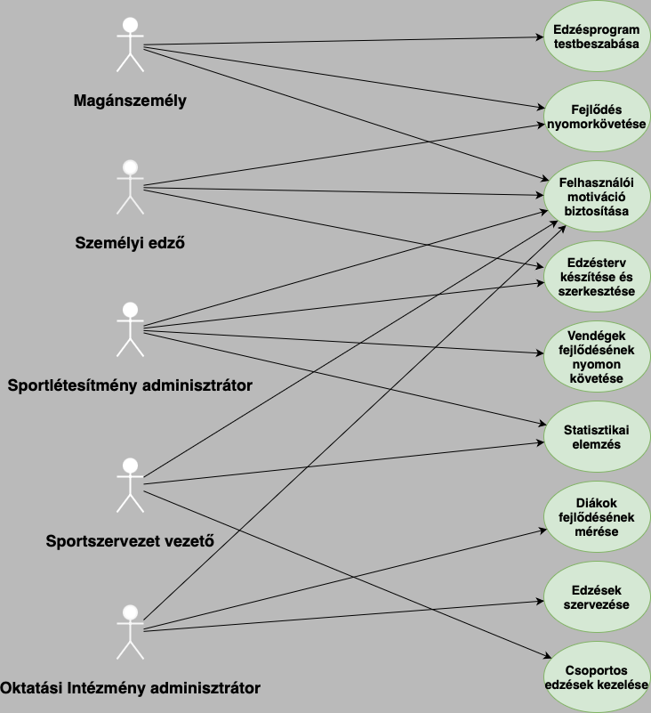

Software követelmény specifikáció (SRS)
1. Bevezetés
A fitness alkalmazás fejlesztésének célja egy átfogó és felhasználóbarát platform létrehozása, amely támogatja a felhasználók különböző fitneszcéljainak elérését, az egészséges életmód fenntartását és az egyéni teljesítmény növelését. Ez a dokumentum a Java és Spring Boot technológiákra épülő projekt megvalósításának alapjait fekteti le, részletezve a tervezési folyamatot, az applikáció struktúráját és a megvalósítás során felmerülő technológiai kihívásokat.
A fitness applikációk piaca folyamatosan bővül, hiszen egyre több felhasználó keres olyan digitális eszközöket, amelyek lehetővé teszik a testmozgás, az étrend és a fizikai fejlődés nyomon követését. A fejlesztés alatt álló alkalmazás nem csupán az egyéni edzéskövetést célozza, hanem olyan funkciókat is kínál, amelyek támogatják a közösségi élményt és a szakmai integrációt: lehetőséget nyújt sportlétesítményekkel és személyi edzőkkel való együttműködésre, valamint statisztikai elemzéseket biztosít az egyéni teljesítmény kiértékelésére.
2. Áttekintés
Az alkalmazás tervezésekor kiemelt célunk, hogy az egyéni és közösségi fitneszigényeket is támogató, sokoldalú platformot hozzunk létre. Ehhez egy rugalmas és könnyen testreszabható rendszer szükséges, amely egyaránt segíti a kezdő felhasználókat és a professzionális edzőket céljaik elérésében.
2.1. Moduláris és Testreszabható Felépítés
A fitness applikáció moduláris szerkezetének köszönhetően a felhasználók különböző igényeik alapján szabhatják testre az alkalmazást, így lehetőség nyílik az egyedi célokhoz igazított edzéstervek összeállítására, nyomon követésére és optimalizálására. Például, a súlycsökkentésre, izomépítésre vagy állóképesség fejlesztésére vágyók mind személyre szabott ajánlásokat kaphatnak. Ezen kívül az étkezési naplózás funkció lehetőséget biztosít arra, hogy a felhasználók az étkezési szokásaikat is szorosan figyelemmel kísérjék, támogatva ezzel a táplálkozási céljaikat és egészségi állapotuk javítását.
Az applikáció belső struktúrája lehetővé teszi a különböző modulok rugalmas kezelését: az új funkciók hozzáadása vagy a meglévők finomítása könnyedén elvégezhető, és a felhasználók visszajelzései alapján az alkalmazás képes folyamatosan fejlődni. Ez a modularitás hosszú távon biztosítja az alkalmazás frissességét és relevanciáját a fitneszpiacon.
2.2. Felhasználóbarát Felület és Könnyű Használhatóság
A felhasználói élmény középpontjában a letisztult és modern felhasználói felület áll, amely átlátható és egyszerű navigációt biztosít. A cél az, hogy a felhasználók minimális technikai ismeretekkel is képesek legyenek magabiztosan használni az applikációt, így az edzéstervek készítése, módosítása és az előrehaladás nyomon követése mindenki számára könnyedén elérhető legyen. A vizuális megjelenést és az interakciókat úgy terveztük meg, hogy a felhasználók gyorsan megértsék a funkciókat és motiválva érezzék magukat a platform használatára.
A felhasználói felület minden eleme logikus sorrendben és intuitív elrendezésben helyezkedik el, ami lehetővé teszi a gyors és gördülékeny navigációt az egyes funkciók között. Az alkalmazásban elérhető interaktív elemek, mint például grafikonok, teljesítménymutatók és eredményriportok, vizuálisan is segítik a felhasználók fejlődésének követését, így motiválva őket a folyamatos edzésre és az életmódbeli célok elérésére.
2.3. Integrációs Lehetőségek
A modern fitness alkalmazások piacán elengedhetetlen, hogy az alkalmazás könnyen integrálható legyen külső eszközökkel és platformokkal. Ennek érdekében az applikáció fejlesztése során számos integrációs lehetőséget építünk be, amelyekkel a felhasználók különböző fitneszkiegészítőket, például okosórákat, pulzusmérőket és lépésszámlálókat kapcsolhatnak össze az alkalmazással. Az eszközök által gyűjtött adatok (például pulzus, kalóriaégetés, alvásminőség) valós időben kerülnek feldolgozásra, így a felhasználók minden edzés után pontos visszajelzést kapnak teljesítményükről.
Ezen túlmenően, az alkalmazás lehetőséget nyújt a felhasználók számára, hogy népszerű fitneszplatformokkal, mint például a MyFitnessPal, a Fitbit vagy a Strava, összekapcsolódva szinkronizálják adataikat
Ez az integráció lehetővé teszi a felhasználók számára, hogy egyetlen helyen követhessék minden fitnesztevékenységüket, ami átfogóbb képet ad az egészségi állapotukról és a fejlődésükről. A sportlétesítményekkel és személyi edzőkkel történő integrációk révén az alkalmazás nemcsak az egyéni felhasználók számára nyújt hasznos eszközöket, hanem a szakemberek számára is, akik hatékonyabban tudják támogatni klienseiket a fitneszcéljaik elérésében.
2.4. Skálázhatóság és Teljesítmény
Az alkalmazás tervezésekor fontos szempont a skálázhatóság és a rendszer teljesítményének biztosítása. Mivel az applikáció adatbázis-alapú, nagy adatmennyiségek tárolására és gyors feldolgozására képes. A fejlesztés során gondosan megtervezett adatbázis-struktúra és a háttérfolyamatok optimalizálása biztosítja, hogy a rendszer gördülékenyen kezelje a felhasználói adatokat, edzésterveket és teljesítménystatisztikákat. A terheléselosztó mechanizmusok és a nagy teljesítményű szerverkapacitás lehetővé teszi, hogy az applikáció folyamatosan magas színvonalú szolgáltatást nyújtson, még nagy felhasználói terhelés esetén is.
A teljesítmény és a gyors válaszidők elérése érdekében a rendszer alapját képező technológiákat, mint a Java és Spring Boot, gondosan választottuk meg. Ezek lehetővé teszik a háttérfolyamatok optimalizálását és a gyors adatlekérdezést, ami hozzájárul a felhasználói élmény magas szintjének fenntartásához. A felhasználók igényei és a használat növekedésével a rendszer könnyen bővíthető, ami garantálja, hogy az applikáció hosszú távon is megbízható és fenntartható megoldás marad.
2.5. Versenyelőny és Piaci Pozíció
A piaci helyzet elemzése alapján a jelenlegi fitness alkalmazások közül kevés kínál teljes körű, személyre szabott megoldásokat és integrációkat, amelyek lehetővé tennék a felhasználók számára a testre szabható edzéskövetést és az eszközök széles körű támogatását. Az általunk fejlesztett applikáció célja, hogy egyedülálló módon ötvözze a közösségi, személyes és szakmai célokat támogató eszközöket, amelyek révén a felhasználók valóban egyéni igényeiknek megfelelő megoldást kapnak. Az applikáció skálázhatósága, rugalmassága és a felhasználói élményre való összpontosítása mind hozzájárulnak ahhoz, hogy a piacon kiemelkedő helyet foglaljon el.
Összességében, az applikáció fejlesztésekor célunk, hogy egy innovatív, könnyen használható és a modern fitnesztrendekhez igazodó eszközt nyújtsunk, amely segíti a felhasználókat céljaik elérésében, miközben a teljesítmény és a felhasználói élmény szempontjából is megfelel a legmagasabb elvárásoknak.
3. A rendszer funkciói
A fitness applikáció olyan átfogó funkciókat kínál, amelyek megfelelnek a modern fitneszpiac követelményeinek és segítik a felhasználókat az egészséges életmód fenntartásában. A fejlett grafikai elemekkel, széles körű edzés- és étrendfunkciókkal, valamint egy egyszerű, felhasználóbarát kezelőfelülettel a rendszer célja, hogy átfogó és motiváló élményt nyújtson a felhasználók számára. A következőkben részletesen ismertetjük a rendszer fő funkcióit, amelyek biztosítják, hogy a felhasználók személyre szabott edzéstervet, étrendi ajánlásokat és motivációs támogatást kapjanak céljaik eléréséhez.
3.1.1 Edzésterv
Az applikáció átfogó, személyre szabható edzésterv modullal rendelkezik, amely lehetővé teszi a felhasználók számára, hogy egyedi céljaiknak és edzettségi szintjüknek megfelelő edzéstervet alakítsanak ki és kövessenek. Az edzésterv funkció átgondolt, könnyen kezelhető felépítésével és a különböző edzéstípusok széles választékával támogatja a felhasználókat fitneszcéljaik elérésében, legyen szó akár erőnléti, állóképességi, mobilitási, vagy általános egészségmegőrzési célokról.
- Edzésgyűjtemények és Programok: Az alkalmazásban elérhető különböző edzésgyűjtemények és kész programok az edzés célja szerint csoportosítva állnak rendelkezésre, így a felhasználók könnyen választhatnak a nekik leginkább megfelelő programok közül. Ezek az edzésprogramok tartalmazhatnak például erőnléti edzést, amely az izomerősítést szolgálja; kardió edzést, amely a szív- és érrendszer állóképességének javítására összpontosít; nyújtási és mobilitási gyakorlatokat, amelyek az izmok rugalmasságát és az ízületi mozgékonyságot segítik; valamint funkcionális edzéseket, amelyek mindennapi mozgásokat modelleznek, így növelve a felhasználók mindennapi mozgásminőségét és teljesítőképességét.
- Egyéni Gyakorlatok és Feladatok:: Az applikáció részletes adatbázist kínál a különféle gyakorlatokról, amelyeket a felhasználók egyedileg válogathatnak össze saját edzéstervükhöz. Minden gyakorlat tartalmazza a szükséges információkat a helyes végrehajtáshoz, így például a technikai leírást, ajánlott ismétlésszámokat és szetteket, valamint pihenőidőket is. Az egyes gyakorlatokhoz multimédiás elemek, például oktatóvideók és illusztrációk kapcsolódnak, amelyek biztosítják a megfelelő kivitelezést. Ezáltal nemcsak az edzőtermekben, de akár otthoni környezetben is biztonságosan végezhetők a gyakorlatok.
- Edzésterv Tervezés és Testreszabás:Az edzésterv testreszabási lehetőségeinek köszönhetően a felhasználók minden egyes edzésprogramot az aktuális állapotukhoz és céljaikhoz igazíthatnak. Az alkalmazás figyelembe veszi a felhasználók által megadott edzési célokat, mint például a súlycsökkentést, az izomtömeg növelését vagy az állóképesség fejlesztését, és ezek alapján javasol gyakorlatokat és feladatokat. Az edzésterv összeállításakor a felhasználók beállíthatják az edzések intenzitását, időtartamát, valamint a gyakorlatok sorrendjét, és módosíthatják a tervet az edzettségi szintjük növekedésével.
- Haladás Nyomon Követése és Elért Mérföldkövek:Az alkalmazás a felhasználók minden egyes edzését és a fejlődésükhöz kapcsolódó statisztikákat rögzíti, és különböző mutatókkal segíti az elért mérföldkövek követését. Ez magában foglalja az elvégzett gyakorlatok számát, a sorozatok és ismétlések növekedését, valamint az edzések rendszerességét és intenzitását. A felhasználók visszajelzést kapnak az elért eredményekről, például arról, hogy mennyi idő alatt érték el a következő szintet, vagy hogy hány alkalommal teljesítettek egy adott gyakorlatot. Ez a nyomon követés nemcsak a motivációt erősíti, hanem lehetővé teszi a teljesítmény pontos monitorozását és elemzését.
- Automatizált Ajánlások és Dinamikus Edzésterv-frissítések:A rendszer automatikus ajánlásokat is nyújt, amelyek figyelembe veszik a felhasználó aktuális fizikai állapotát, terhelhetőségét és az edzési céljait. Például, ha a felhasználó nagyobb hangsúlyt szeretne helyezni az erőnövelésre, az alkalmazás javaslatot tehet a súlyok emelésére vagy az ismétlésszám növelésére, míg állóképesség javítása esetén a kardió programok intenzitásának fokozását ajánlhatja. Az automatizált ajánlások segítségével a felhasználók fokozatosan, biztonságosan növelhetik az edzésterhelést, így elkerülhető a túlzott igénybevétel és az esetleges sérülések.
- Pihenőidők és Regenerációs Tervezés:Az alkalmazás az edzések közötti pihenőidőket is figyeli, és segíti a felhasználókat az optimális regeneráció biztosításában. Az edzések és gyakorlatok közötti pihenési idő beállítható, és a rendszer értesítést küld a következő gyakorlat megkezdésekor. Emellett hosszabb távú regenerációs javaslatokat is nyújt, például aktív pihenőnapokat és alacsony intenzitású edzéseket, amelyek elősegítik a test teljes helyreállítását.
- Edzési Napló és Részletes Visszajelzések:Az applikáció egy részletes edzési naplót is vezet, amelyben a felhasználók rögzíthetik minden egyes edzésük részleteit, így például a hangulatukat, az energiájukat és a teljesítményüket. Ezen kívül a felhasználók lehetőséget kapnak arra, hogy minden edzés után visszajelzést adjanak, ami alapján az alkalmazás személyre szabott javaslatokat tehet a következő edzésekhez.
- Célorientált Mérföldkövek és Jutalmazási Rendszer:A felhasználók számára az alkalmazás különböző mérföldköveket és célokat jelöl ki, amelyek elérése esetén motiváló visszajelzéseket és virtuális „jutalmakat” kaphatnak. Ez a jutalmazási rendszer további ösztönzést biztosít, és segít a felhasználóknak fenntartani a motivációjukat hosszú távon. Például, ha a felhasználó sikeresen befejez egy edzésprogramot, virtuális jelvényeket vagy szinteket érhet el, amelyeket megoszthat barátaival és edzőpartnereivel.
- Helyzetfüggő Edzési Javaslatok:Az alkalmazás intelligens módon felismeri a felhasználó jelenlegi helyzetét vagy edzési környezetét, így például az otthoni edzéshez, az edzőteremhez, vagy szabadtéri edzéshez is javaslatokat nyújthat. Ez a funkció lehetővé teszi, hogy a felhasználók a helyszínhez leginkább illeszkedő gyakorlatokat válasszák ki, legyen szó eszközzel végzett vagy saját testsúlyos edzésről.
- Edzésstatisztikák és Eredmények Megosztása:Az edzésterv modul lehetőséget biztosít arra, hogy a felhasználók megosszák elért eredményeiket és teljesítményüket másokkal. Az alkalmazás grafikus elemekkel, például diagramokkal és grafikonokkal jeleníti meg az edzési statisztikákat, így a felhasználók könnyen átláthatják fejlődésüket, és megoszthatják eredményeiket barátaikkal, családtagjaikkal vagy edzőpartnereikkel.
Az edzésterv funkció átfogó, részletes és maximálisan személyre szabható. A különböző elemek révén a felhasználók teljes kontrollt kapnak saját fitneszprogramjuk felett, és minden edzésnél lehetőségük van visszajelzéseket kapni, fejlődésüket nyomon követni, és új célokat kitűzni. Az alkalmazás minden szintű felhasználó számára optimális edzéstervet biztosít, legyen szó kezdőkről, akik az alapokat szeretnék elsajátítani, vagy haladókról, akik specifikus fitneszcélokat kívánnak elérni.
3.1.2 Étrend
Az alkalmazás étrendmodulja lehetőséget nyújt a felhasználóknak, hogy személyre szabott és kiegyensúlyozott étrendet alakítsanak ki, amely támogatja a fitnesz- és egészségügyi céljaikat. Az étrendi funkciók középpontjában az egyéni táplálkozási szükségletek állnak, figyelembe véve a felhasználó aktivitási szintjét, fizikai céljait és ízlését. A modul összetett és könnyen kezelhető felülettel rendelkezik, amely segíti a felhasználókat az egészséges étkezési szokások kialakításában és fenntartásában.
- Személyre szabott étrendi ajánlások:Az alkalmazás elemzi a felhasználó egyéni igényeit, mint például az életkorát, nemét, testsúlyát, magasságát, fizikai aktivitási szintjét, valamint a kitűzött célokat (pl. fogyás, izomtömeg növelés, szinten tartás). Az elemzés alapján az alkalmazás javaslatokat ad a napi kalória- és makrotápanyag-bevitelre, amelynek megfelelően személyre szabott étrendet ajánl. Az ajánlások figyelembe veszik a felhasználók étkezési szokásait, például a vegetáriánus vagy vegán étrendet, a glutén- vagy laktózérzékenységet, és ez alapján biztosítanak egyedi étrendi terveket.
- Kalóriaszámítás és Makrotápanyag-eloszlás:: Az applikáció segítségével a felhasználók nyomon követhetik a napi kalóriabevitelüket, valamint a makrotápanyag-eloszlást (fehérje, szénhidrát, zsír) is. Az alkalmazás számításokat végez az egyéni célok figyelembevételével, így támogatva a felhasználókat az optimális tápanyagarány elérésében. Az alkalmazás automatikusan figyelmeztet, ha a felhasználó túl- vagy alulmarad a kalória- vagy tápanyagcélokhoz képest, és javaslatokat kínál az egyensúly helyreállítására, ezáltal támogatva a hatékony fogyást vagy éppen az izomépítést.
- Étkezési Időzítés és Tervezés:Az alkalmazás étkezési időzítést és tervezést is kínál, amely segíti a felhasználókat az étkezési rutinok kialakításában. Az étkezési időpontokat a napi aktivitás szintje alapján ajánlja, például egy intenzívebb edzés után fehérjében gazdag ételt javasol, amely segíti az izmok regenerációját. Az alkalmazás előre jelzi a napra vagy hétre vonatkozó étkezési terveket, figyelmeztető értesítéseket küld, ha eljött az étkezés ideje, és részletes információkat nyújt az egyes ételek tápanyagtartalmáról, ami segíti az egészséges étkezési szokások fenntartását.
- Receptgyűjtemény:Az alkalmazás egy átfogó receptgyűjteményt kínál, amely tápláló, könnyen elkészíthető ételeket tartalmaz. A receptek különféle étrendi preferenciák szerint szűrhetők, mint például vegetáriánus, vegán, gluténmentes vagy alacsony szénhidráttartalmú opciók. Minden recept tartalmazza az elkészítési időt, a hozzávalók listáját, lépésenkénti elkészítési útmutatót, valamint az egyes adagok kalória- és tápanyagtartalmát. A felhasználók kedvenc receptjeiket elmenthetik vagy saját receptjeiket is hozzáadhatják, így a gyűjtemény folyamatosan bővíthető személyes kedvencekkel.
- Bevásárlólista:Az étrendi modulban elérhető egy automatikus bevásárlólista funkció is, amely a felhasználók által kiválasztott heti étrend alapján összeállítja a szükséges alapanyagokat. Ez a lista megkönnyíti az étkezéshez szükséges hozzávalók beszerzését, és segít abban, hogy a felhasználók előre felkészülhessenek a heti étkezéseikre. Az alapanyagokat kategóriák szerint csoportosítja, és a felhasználók lehetőséget kapnak arra, hogy egyéni preferenciáik alapján módosítsák a listát.
- Speciális Étrendi Szűrők és Allergénfigyelmeztetések:Az alkalmazás lehetőséget biztosít arra, hogy a felhasználók étrendi szűrőket állítsanak be az ételek kiválasztásakor. Például, ha egy felhasználó laktóz- vagy gluténérzékeny, az alkalmazás automatikusan figyelmeztet és alternatív ételeket ajánl, amelyek megfelelnek az étrendi korlátozásoknak. Ezzel az alkalmazás hozzájárul az egészséges és biztonságos étkezéshez, különösen azok számára, akiknek különleges diétára van szükségük.
- Étkezési Napló és Étrend-visszajelzés:A felhasználók napi étrendi tevékenységüket és étkezéseiket rögzíthetik az étkezési naplóban, amely részletes adatokat nyújt a fogyasztott kalóriákról és tápanyagokról. Az étkezési napló funkció lehetővé teszi, hogy a felhasználók visszatekintsenek az étkezési szokásaikra, felismerjék az esetleges hibákat, és célzottan javítsanak az étrendjükön. Az alkalmazás emellett személyre szabott étrendi visszajelzéseket nyújt, amelyek motiválják a felhasználókat az egészséges táplálkozási szokások fenntartásában.
- Folyamatos Kalória- és Tápanyag-nyomon követés:Az applikáció valós idejű kalória- és tápanyag-nyomon követési rendszert biztosít, amely segíti a felhasználókat abban, hogy minden étkezésüket összhangba hozzák napi kalóriacéljaikkal. A rendszer különböző grafikus elemeket, például diagramokat és grafikonokat használ a kalória- és tápanyagfogyasztás megjelenítésére, így a felhasználók könnyen átláthatják, hogy mennyire állnak közel a napi céljaikhoz. Az alkalmazás emlékeztető értesítéseket küldhet, ha a felhasználó napi kalóriabevitele túllépett egy meghatározott határt, vagy ha valamelyik tápanyagcsoportnál hiány lép fel.
- Heti és Havi Táplálkozási Jelentések:Az alkalmazás rendszeres időközönként heti és havi táplálkozási jelentéseket készít, amelyek részletes adatokat nyújtanak a felhasználók kalória- és tápanyagfogyasztásáról, valamint az étrendi célok teljesítéséről. Ezek a jelentések kiemelik a sikereket és az esetleges hiányosságokat, segítve a felhasználókat az étrendjük folyamatos optimalizálásában és hosszú távú céljaik elérésében. A jelentések megoszthatók például dietetikusokkal vagy edzőkkel, ami segíti a szakembereket abban, hogy személyre szabott tanácsokkal támogassák a felhasználókat.
- Étkezési Szokások Elemzése és Javaslatok:Az alkalmazás figyeli a felhasználó étkezési szokásait, és statisztikai elemzéseket végez az étrendje alapján. Például, ha a felhasználó gyakran fogyaszt zsírokban gazdag ételeket, az alkalmazás javaslatokat adhat arra, hogyan csökkentse ezek bevitelét. Az elemzés eredményeként az applikáció személyre szabott étrendi tanácsokat ad, amelyek segítik a felhasználókat abban, hogy kiegyensúlyozottabb és egészségesebb étkezési szokásokat alakítsanak ki.
- Motivációs Eszközök és Tippek:A felhasználók rendszeres motivációs tippeket és javaslatokat kapnak az étrendi célok elérése érdekében. Ezek a tippek segítenek fenntartani a lelkesedést és támogatják a helyes táplálkozási szokások kialakítását. Az alkalmazás tájékoztatást nyújt arról is, hogy az egészséges étrend hogyan járul hozzá az edzések hatékonyságához és a felhasználók általános jólétéhez.
Az étrendmodul összetett, könnyen használható és maximálisan testreszabható, ami lehetővé teszi, hogy a felhasználók olyan étrendet kövessenek, amely nemcsak az edzéstervüket, hanem az életmódbeli céljaikat is támogatja. Az alkalmazás segít az egészséges táplálkozás fenntartásában, és olyan részletes, naprakész információkkal látja el a felhasználókat, amelyek elősegítik a kiegyensúlyozott és egészségtudatos életmódot.
3.1.3 Célok és motiváció
Az alkalmazásban kiemelt szerepet kap a felhasználók egyéni fitneszcéljainak kitűzése és a motiváció fenntartása, ami segíti őket a hosszú távú életmódbeli és egészségügyi célok elérésében. A célok és motivációs modul számos funkcióval támogatja a felhasználókat abban, hogy fókuszáltak maradjanak és folyamatos visszajelzést kapjanak fejlődésükről. A rendszer figyelembe veszi a felhasználók egyéni preferenciáit és igényeit, így a motivációs eszközök személyre szabottan nyújtanak támogatást.
- Személyre Szabható Célkitűzés:A felhasználók beállíthatják saját fitneszcéljaikat az applikációban, például súlycsökkentés, izomtömeg növelés, állóképesség fejlesztés, vagy egyszerűen az általános fittség elérése céljából. Az alkalmazás lehetőséget biztosít arra, hogy a felhasználók részletesen meghatározzák céljaikat, beleértve az elérni kívánt súlyt, az elvárt edzési teljesítményt vagy az edzések gyakoriságát és intenzitását. A célok megadásával az applikáció egyedi edzéstervet és étrendet ajánl, amely illeszkedik az adott felhasználó célkitűzéseihez, és folyamatosan segíti őt az elérni kívánt eredmények felé vezető úton.
- Részletes Céltervezés és Mérföldkövek:Az alkalmazás célorientált tervet állít össze a felhasználóknak, amely lépésekre bontja a célkitűzéseket, így azok könnyebben elérhetővé válnak. A mérföldkövek rendszeres elérése segíti a felhasználókat abban, hogy motiváltak maradjanak, hiszen minden egyes kisebb sikerélmény lendületet ad a további fejlődéshez. A mérföldkövek teljesítése során a felhasználók értesítéseket kapnak, amelyek tájékoztatják őket a haladásukról és a következő célokról.
- Célkövetés és Teljesítménystatisztikák:Az alkalmazás minden egyes edzés és étrend tevékenységet rögzít, és megjeleníti a felhasználók számára az elért eredményeket és a teljesített mérföldköveket. A célkövetési rendszer vizuálisan megjeleníti a fejlődést, például grafikonokon és diagramokon, így a felhasználók könnyen nyomon követhetik, hogy mennyire közelítik meg a kitűzött célokat. A folyamatos visszajelzés hozzájárul ahhoz, hogy a felhasználók tisztán lássák a fejlődésüket, ami további motivációt ad számukra.
- Motiváló Üzenetek és Értesítések:Az alkalmazás rendszeres motivációs üzeneteket és tippeket küld a felhasználóknak, amelyek ösztönzik őket a céljaik elérésére. Ezek az értesítések lehetnek pozitív visszajelzések az elért eredményekről, napi edzési emlékeztetők, vagy éppen olyan inspiráló idézetek, amelyek további kitartást nyújtanak. Az értesítéseket személyre szabottan küldi az alkalmazás, például ha a felhasználó hosszabb ideig nem edzett, akkor egy emlékeztetővel ösztönözheti őt az edzés folytatására.
- Összetett Motivációs Funkciók és Jutalmazási Rendszer:A rendszer különböző motivációs eszközökkel segíti a felhasználókat abban, hogy elérjék céljaikat. A célok elérésekor vagy új mérföldkövek megdöntésekor a felhasználók virtuális jutalmakat kapnak, például jelvényeket, szinteket vagy különleges kitüntetéseket, amelyek segítenek fenntartani a motivációjukat. A jutalmazási rendszer továbbá lehetőséget biztosít a felhasználóknak arra, hogy megosszák az elért eredményeiket a közösségi hálózatokon, ami még nagyobb inspirációt adhat számukra.
- Napi és Heti Célkitűzések és Rutinok:Az alkalmazás lehetőséget ad arra, hogy a felhasználók napi és heti célkitűzéseket állítsanak be, amelyek segítenek a napi rutinfeladatok rendszeres végrehajtásában. Ezek a rövid távú célok, például egy adott napi kalóriabevitel betartása vagy egy heti edzésszám elérése, kisebb lépésekben támogatják a hosszú távú célok elérését. Az applikáció emlékeztetőket küld ezek teljesítésére, és pozitív visszajelzéseket nyújt a sikeres befejezéskor, ami fokozza a felhasználók önbizalmát és motivációját.
- Személyre Szabott Motivációs Tartalmak:Az alkalmazás személyre szabott motivációs tartalmakat is kínál, amelyek támogatják a felhasználókat az egészséges életmód fenntartásában. Ezek a tartalmak lehetnek például inspiráló videók, cikkek vagy blogbejegyzések, amelyek segítenek a felhasználóknak új edzési technikákat, táplálkozási tanácsokat és motivációs stratégiákat megismerni. Az applikáció egyedi motivációs idézeteket is küld a felhasználóknak, amelyek személyre szabottan segítik őket a kitartásban és az optimizmus megőrzésében.
- Részletes Teljesítmény-összesítők és Eredmények:Az alkalmazás heti, havi és éves teljesítmény-összesítéseket is készít, amelyek részletes elemzéseket nyújtanak a felhasználók fejlődéséről. Ezek az összesítők megmutatják, hogy milyen lépéseket tettek meg a felhasználók a céljaik elérése érdekében, és rávilágítanak az elért eredményekre, például a leadott kilókra, az elvégzett edzések számára, vagy a megnövekedett erőnlétre. Az ilyen részletes visszajelzések segítenek a felhasználóknak látni a hosszú távú fejlődést, ami további inspirációt nyújt.
- Kihívások és Közös Célkitűzések:Az alkalmazás különböző kihívásokat és közös célokat is kínál a felhasználóknak, amelyek növelik a versenyszellemet és a közösségi támogatást. A kihívások lehetnek például egy adott időszak alatt elérendő súlycsökkentési célok, heti edzési gyakoriság növelése, vagy közös futás célok, amelyek során a felhasználók egymást motiválhatják és támogathatják. Ezek a közös célok lehetőséget adnak a felhasználóknak arra, hogy egy támogató közösség részévé váljanak, és még erősebben érezzék a motivációt.
- Sikeres Felhasználói Történetek és Inspirációs Források:Az alkalmazás kiemelt figyelmet fordít a motiváció fenntartására sikeres felhasználói történetek és valós példák megosztásával. A felhasználók olvashatnak olyan történeteket, amelyek bemutatják mások fitnesz- és életmódváltási sikereit, és inspirációt meríthetnek ezekből. Az alkalmazásban található inspirációs tartalmak és személyes történetek arra ösztönzik a felhasználókat, hogy tartsanak ki céljaik mellett, és higgyenek abban, hogy a változás lehetséges.
- Edzői és Táplálkozási Szakértői Tanácsok:Az alkalmazásban elérhetők edzői és táplálkozási szakértői tanácsok, amelyek kifejezetten a felhasználók céljaihoz igazodnak. Az edzők által kidolgozott célorientált tanácsok és tippek segítenek abban, hogy a felhasználók hatékonyan érjék el fitneszcéljaikat, míg a dietetikusok által ajánlott táplálkozási útmutatók támogatják az egészséges étrend fenntartását. A szakértői tanácsok hozzáférhetőek különböző formátumokban, például videókonferencián, írott anyagokban vagy online tanácsadáson keresztül.
Az alkalmazás célok és motivációs modulja komplex és átfogó támogatást nyújt a felhasználóknak abban, hogy elérjék fitnesz- és egészségügyi céljaikat. A rendszer folyamatosan nyomon követi a felhasználók előrehaladását, és motiváló eszközökkel segíti őket a céljaikhoz vezető úton. A személyre szabott célkitűzések, a rendszeres visszajelzések, az inspirációs tartalmak és a jutalmazási rendszer mind hozzájárulnak ahhoz, hogy a felhasználók kitartóak legyenek, és fokozatosan elérjék a kívánt eredményeket.
3.1.4 Közösségi funkciók
A közösségi funkciók az alkalmazás egyik legfontosabb részét képezik, mivel segítenek a felhasználóknak abban, hogy kapcsolatba lépjenek másokkal, megosszák tapasztalataikat, és támogassák egymást a közös célok elérésében. A közösségi élmény növeli a felhasználók elköteleződését, és segít fenntartani a motivációt, mivel a közösségi interakciók és a közös kihívások révén a felhasználók erősebb közösségi kötelékeket alakíthatnak ki. A közösségi funkciók az alábbiakban részletesebben is kifejtésre kerülnek:
- Eredmények Megosztása és Támogatás:A felhasználók lehetőséget kapnak arra, hogy megosszák edzés- és étrendi eredményeiket barátaikkal, családtagjaikkal, valamint más alkalmazásfelhasználókkal. Az eredmények megosztása segít abban, hogy a felhasználók elismerjék saját teljesítményüket, miközben másokat is inspirálnak és motiválnak. Az alkalmazásban lévő „Történet megosztása” funkció lehetővé teszi, hogy a felhasználók fényképeket, előrehaladási grafikonokat, edzésvideókat és étkezési naplóikat osszanak meg, így egymás sikerét látva, új impulzusokat adhatnak egymásnak. Ez a funkció különösen hasznos azok számára, akik szeretnék dokumentálni a fejlődésüket, és elérni a kívánt eredményeket közösségi támogatással.
- Közösségi Kihívások és Versenyek:Az applikáció lehetőséget biztosít különböző közösségi kihívások és versenyek indítására, amelyek során a felhasználók közösen dolgozhatnak, hogy elérjék közös fitneszcéljaikat. A kihívások különféle típusúak lehetnek, például heti lépéskihívások, kalóriaégetési versenyek, vagy erőnléti versenyek. A kihívások részletes statisztikákkal és célkitűzésekkel követhetők, amelyek folyamatosan motiválják a felhasználókat, hogy a legjobb formájukat hozzák. Emellett az alkalmazás rendszeres visszajelzéseket küld a kihívások státuszáról, és tájékoztatja a felhasználókat arról, hogy hol tartanak a többiekhez képest.
- Közösségi Csoportok és Támogatói Közösségek:Az alkalmazásban különböző közösségi csoportok létrehozására van lehetőség, amelyek alapján a felhasználók másokkal együtt dolgozhatnak közös céljaik elérésén. A csoportok tematikusak lehetnek, például "Kezdők csoportja", "Fogyókúrás közösség", "Izomtömeg növelése", vagy "Maraton felkészülés". Ezek a közösségek segítenek abban, hogy a felhasználók tapasztalatokat cseréljenek, motiválják egymást és kérdéseiket közvetlenül más csoporttagokhoz intézhessék. A közösségi csoportok gyakran különböző eseményekhez, beszélgetésekhez és online edzésekhez is csatlakoznak, amelyek új lehetőségeket adnak a felhasználóknak a tanulásra és a fejlődésre.
- Barátok és Követés:Az alkalmazás lehetővé teszi, hogy a felhasználók barátokat és követőket gyűjtsenek, akik figyelemmel kísérhetik fejlődésüket. A barátok közvetlenül láthatják egymás edzés- és étrendi előrehaladását, valamint közvetlen üzeneteket küldhetnek egymásnak. Ez a funkció különösen hasznos azok számára, akik szeretnék, hogy közvetlen motivációt kapjanak ismerősöktől, és közösen dolgozhassanak a céljaik elérésén. A követés lehetővé teszi a felhasználók számára, hogy másokat figyeljenek és inspirálódjanak azok edzésprogramjából, sikerélményeiből.
- Közösségi Hírcsatorna és Feed: Az alkalmazás közösségi hírcsatornája lehetőséget biztosít arra, hogy a felhasználók naprakészen követhessék mások eredményeit, edzéseit és tippeket osszanak meg. A hírcsatornán az új edzésprogramok, motiváló idézetek, táplálkozási tippek és sikerült célkitűzések jelennek meg, ami segít az inspiráció folyamatos fenntartásában. Ezen kívül a felhasználók reagálhatnak mások posztjaira, lájkolhatják őket, vagy kommentelhetnek, ezzel hozzájárulva a közösség aktív részévé váláshoz.
- Közösségi Szavazások és Tippek Megosztása:Az applikáció lehetőséget biztosít a felhasználóknak arra is, hogy közösségi szavazásokat indítsanak, amelyeken kérdéseket tehetnek fel más felhasználóknak. Például kérhetnek tippeket egy adott edzésprogramhoz, vagy megkérdezhetik, hogy a közösség hogyan érte el bizonyos célokat. Az ilyen szavazások elősegítik a közösségi interakciót, és segítenek új ötletek, tanácsok és motivációs források megosztásában.
- Sikeres Történetek és Inspirációs Közösségi Bejegyzések:A felhasználók megoszthatják saját sikerélményeiket, amelyek másokat is inspirálnak. Az applikáció kiemeli azokat a történeteket, amelyek különösen motiválóak, és bemutatják, hogyan értek el mások figyelemre méltó eredményeket. Ezek a történetek segítenek az új felhasználóknak is abban, hogy bízzanak a folyamatban, és elköteleződjenek az egészséges életmód mellett. A közösségi bejegyzések tartalmazhatnak fényképeket, előrehaladási grafikonokat, valamint személyes tapasztalatokat és tanácsokat.
- Egyéni Edzési Partnerek és Támogatás:Az alkalmazás segíti a felhasználókat abban, hogy egyéni edzési partnert találjanak, akivel közösen dolgozhatnak céljaik elérésén. Az edzési partnerek kiválasztásakor figyelembe lehet venni a közös célokat, helyszíneket és edzési preferenciákat, így a felhasználók motiváltabbak lehetnek. Az alkalmazás üzenetküldő rendszere segítségével könnyedén kapcsolatba léphetnek a partnerekkel, megoszthatják edzési tapasztalataikat, és támogathatják egymást a fejlődésben.
- Eredményvisszajelzés és Kiemelkedő Tagok:Az applikáció minden hónapban vagy negyedévben kiemelheti a legaktívabb és legmotiváltabb közösségi tagokat, akik például a legtöbb kihívást teljesítették, vagy akik a legnagyobb fejlődést mutatták edzésükben. Ezek a tagok különféle jutalmakat kaphatnak, például ingyenes prémium funkciókat, ingyenes tanácsadást személyi edzőktől, vagy ajándékokat, amelyeket a közösség elismeréséül kaphatnak.
A közösségi funkciók nemcsak szórakoztatóak, hanem segítenek fenntartani a motivációt és elköteleződést a felhasználók számára. A rendszeres interakciók, támogatás és versenyek hozzájárulnak ahhoz, hogy a felhasználók hosszú távon is aktívan részt vegyenek a fitnesz közösségben, és közösen érjék el a kitűzött céljaikat.
3.1.5 Motiváló tartalom
A motiváló tartalom az egyik legfontosabb összetevője annak, hogy a felhasználók hosszú távon is elköteleződjenek az edzéstervük mellett, és valóban elérjék a kitűzött céljaikat. Mivel a fitness célok gyakran időigényesek és kihívásokkal teli utat jelentenek, elengedhetetlen, hogy folyamatosan fenntartsuk a felhasználók motivációját. Az alkalmazás ezért számos, személyre szabott motivációs elemet kínál, amelyek vizuálisan és érzelmileg is hatékonyan ösztönzik a felhasználókat a fejlődésre és a kitartásra. A motiváló tartalom az edzések során, azok előtt és után is aktívan jelen van, így biztosítva a folyamatos inspirációt.
Az alkalmazás célja, hogy ne csak fizikai eredményeket, hanem mentális fejlődést is biztosítson a felhasználóknak, hiszen a sikeres edzések mögött gyakran a megfelelő hozzáállás és elhatározás áll. A motiváló tartalom különböző formákban elérhető, így minden felhasználó megtalálhatja a számára legmegfelelőbb eszközöket a folyamatos fejlődéshez.
- Teljesítménydiagramok és vizuális elemek:Az alkalmazás grafikus teljesítménydiagramokat biztosít, amelyek folyamatosan nyomon követhetők és megjelenítik a felhasználó edzéseinek fejlődését. A vizuális elemek, mint a színes grafikák, teljesítménymérföldkövek és célkitűzési szintek, lehetővé teszik, hogy a felhasználók könnyen észrevegyék az elért eredményeiket, valamint motiválják őket az előrehaladásra. Az alkalmazás automatikusan frissíti és módosítja a célkitűzéseket, ahogy a felhasználó egyre közelebb kerül az eredményeihez, így biztosítva, hogy a felhasználók mindig elérhető, új és kihívást jelentő célt tűzzenek ki maguk elé. A rendszeres mérföldkövek és célkitűzések elérése különösen fontos, mivel a kis lépésekben történő előrelépés segít megőrizni a felhasználók motivációját, még akkor is, amikor a fejlődés lassú ütemben történik.
- Inspiráló idézetek és videók:Az alkalmazás napi szinten inspiráló idézeteket és motiváló videókat kínál, amelyek a felhasználók számára ösztönző erőt adnak a céljaik eléréséhez. Az idézetek és videók különböző tematikákra építenek, mint például a kitartás, a mentalitás ereje, a fizikai és mentális határok átlépése, vagy a sikeres emberek történetei. Ezen tartalmak rendszeres frissítése biztosítja, hogy a felhasználók folyamatosan új és változatos inspirációkhoz jussanak, amelyek segítenek nekik átlépni a nehéz pillanatokon. Az idézetek és videók elérhetősége nemcsak az edzések előtt és után, hanem az edzés közbeni motiváció fenntartásához is hozzájárul. A videók például szakértői tanácsokat, edzési tippeket, vagy éppen a sportolók személyes történeteit tartalmazhatják, amelyek segítenek a felhasználóknak abban, hogy átvészeljék a nehézségeket és folytassák az edzéseket.
- Motivációs kihívások és versenyek:Az alkalmazásban rendszeresen kihívások és versenyek kerülnek megrendezésre, amelyek extra ösztönzést biztosítanak a felhasználóknak. Ezek a kihívások különböző szinteken és célok szerint vannak kialakítva, így minden felhasználó számára elérhetőek. A versenyek célja, hogy ne csak a saját teljesítményüket mérjék a felhasználók, hanem másokkal való összehasonlítás által is motiválódjanak. Az alkalmazás lehetőséget biztosít, hogy a felhasználók másokkal közösen teljesítsenek kihívásokat, ezzel erősítve a közösségi érzést és a motivációt. A legjobban teljesítő felhasználók díjakat, érmeket vagy akár ajándékokat nyerhetnek, amelyek további ösztönző erőt adnak.
- Személyre szabott motivációs üzenetek:Az alkalmazás mesterséges intelligencia segítségével elemzi a felhasználók eddigi teljesítményét, és személyre szabott motivációs üzeneteket küld nekik, amelyek az adott pillanatban szükséges ösztönzést adják. Az üzenetek figyelembe veszik a felhasználó céljait, előrehaladását és edzési szokásait, és olyan motiváló szövegekkel bátorítják őket, amelyek segítenek fenntartani a lelkesedést. Például egy felhasználó, aki nehezebben ér el edzéscélokat, kaphat olyan üzenetet, amely az előző heti fejlődésére hívja fel a figyelmét, míg egy gyorsabban fejlődő felhasználónak új kihívásokat és magasabb célokat ajánlhat az alkalmazás.
- Zene és hanganyagok:A megfelelő zene jelentős hatással van a teljesítményre és a motivációra, ezért az alkalmazás lehetőséget ad arra, hogy a felhasználók személyre szabják a lejátszási listáikat az edzéseikhez. Az alkalmazás zenei és hanganyagokat is biztosít, amelyek kifejezetten a fizikai aktivitás fokozására lettek tervezve. Ezek a zenék gyors üteműek, dinamikusak és energikusak, amelyek segítenek fenntartani a motivációt és lendületet adnak az edzés során. Továbbá, az alkalmazás hanganyagokat is kínál, amelyek inspiráló beszédekkel, relaxációs technikákkal vagy éppen pozitív visszajelzésekkel segítenek a felhasználóknak abban, hogy fókuszáljanak a céljaikra.
- Közösségi interakciók és támogatás:Az alkalmazás közösségi funkciói lehetővé teszik, hogy a felhasználók kapcsolatba lépjenek másokkal, megosszák edzésélményeiket és tippeket adjanak egymásnak. A közösségi hálózatok és fórumok segítenek abban, hogy a felhasználók ne érezzék magukat egyedül a fejlődésük során, hanem támogató közösség részei legyenek. Az alkalmazás ösztönzi a felhasználókat arra, hogy kövessék egymást, kommentálják egymás eredményeit, és közösen ünnepeljék meg a sikeres pillanatokat. A közösségi kapcsolatok erősítése hozzájárul a motiváció fenntartásához, mivel a felhasználók gyakran inspirálódnak mások történeteiből és eredményeiből.
3.1.6 Vizuális statisztikák
A vizuális statisztikák kulcsszerepet játszanak abban, hogy a felhasználók könnyen észrevegyék saját fejlődésüket és pontosan nyomon követhessék, hogyan haladnak a kitűzött céljaik felé. Az alkalmazás egyik legfontosabb célja, hogy a statisztikai adatok ne csupán számszerűsítsék az eredményeket, hanem könnyen értelmezhetőek és vizuálisan is átláthatóak legyenek. A statisztikák világos és könnyen érthető grafikus formában jelennek meg, hogy segítsenek a felhasználóknak a folyamatos fejlődésük nyomon követésében, valamint ösztönözzék őket a további fejlődésre.
Az alkalmazás a statisztikai adatokat különböző típusú vizuális eszközökkel jeleníti meg, amelyek a felhasználók számára biztosítják a fejlődésük folyamatos monitorozását és segítenek abban, hogy egyértelműen lássák, hogyan alakultak eddigi erőfeszítéseik. Az adatokat különböző szempontok szerint rendszerezhetjük és testreszabhatjuk, hogy minden felhasználó a számára legfontosabb mutatókat figyelemmel kísérhesse.
- Grafikonok és diagramok:: A legfontosabb edzés- és étrendi mutatók megjelenítése érdekében az alkalmazás interaktív grafikonokat és diagramokat biztosít, amelyek lehetővé teszik a felhasználók számára, hogy vizuálisan is nyomon követhessék a fejlődésüket. A grafikonok és diagramok különböző típusú adatokat tartalmaznak, például a felhasználók súlyának, testzsírszázalékának, izomtömegük alakulásának, vagy akár az elégetett kalóriák és megtett lépések számának változásait. Az időskálán ábrázolt adatok lehetővé teszik a felhasználók számára, hogy hosszú távú trendeket és rövid távú változásokat is láthassanak, így jobban megérthetik, hogy az edzéseik és étrendjük hogyan befolyásolják a fejlődésüket.
- Teljesítmény-összesítések:Az alkalmazás heti és havi teljesítmény-összesítéseket is kínál, amelyek segítenek a felhasználóknak átfogó képet kapni az eddigi eredményeikről. Az összesítésekben nemcsak az edzésmunkát, hanem az étrenddel kapcsolatos adatokat is megjelenítjük, így a felhasználók könnyen összevethetik a különböző tényezők hatását. A teljesítmény-összesítések különösen fontosak, mivel segítenek a felhasználóknak azonosítani erősségeiket, valamint azokat a területeket, ahol még szükség van javulásra.
- Haladás és célok vizualizálása:Az alkalmazás a felhasználók számára lehetőséget biztosít arra, hogy személyre szabott célokat tűzzenek ki, és nyomon kövessék, hogy mennyire haladnak a céljaik felé. A vizuális statisztikák segítenek abban, hogy a felhasználók a napi, heti és havi célok elérésére koncentráljanak, miközben folyamatosan motiválják őket a célok elérésére. Az alkalmazás különböző színes grafikákkal és százalékos mutatókkal jelzi, hogy hány százalékban érték el a céljaikat, ezzel segítve a felhasználókat abban, hogy reálisan lássák az előrehaladásukat.
- Összehasonlító statisztikák:Az alkalmazás lehetőséget ad arra is, hogy a felhasználók összehasonlítsák saját teljesítményüket másokkal vagy az általuk kitűzött múltbeli eredményekkel. Ez segíti a versenyszellemet és lehetőséget ad a felhasználóknak arra, hogy mérjék, hogyan teljesítenek másokkal összevetve. Az összehasonlító statisztikák, például az azonos nemű vagy korosztályú felhasználók teljesítményének elemzésével, segíthetnek az egészséges verseny kialakításában, ami további motivációt adhat.
- Közösségi és baráti statisztikák:Az alkalmazás közösségi funkcióit kihasználva a felhasználók másokkal is megoszthatják statisztikai eredményeiket. A közösségi platformok lehetőséget biztosítanak a barátokkal és más felhasználókkal való összehasonlításra, ami újabb motiváló erőforrást jelenthet. A baráti statisztikák nemcsak a teljesítményt mérik, hanem közös célok kitűzésére is ösztönözhetik a felhasználókat.
A grafikonok mellett az alkalmazás egyéni szűrőket és testreszabási lehetőségeket is biztosít, amelyek segítségével a felhasználók saját preferenciáik szerint jeleníthetik meg a számukra fontos mutatókat. Az ilyen típusú vizuális eszközök segítenek abban, hogy a felhasználók még inkább elköteleződjenek, mivel folyamatosan láthatják a konkrét eredményeiket és a fejlődésüket. A felhasználók például beállíthatják, hogy napi, heti vagy havi szinten kövessék nyomon az eredményeiket, így rugalmasan igazíthatják az adatokat a saját edzési ciklusaikhoz.
A vizuális statisztikák tehát nemcsak egy hasznos funkciót jelentenek, hanem az alkalmazás egyik alapvető motivációs és fejlődési segédletét képezik. A felhasználók számára biztosított könnyen érthető és áttekinthető statisztikai eszközök hozzájárulnak ahhoz, hogy folyamatosan nyomon követhessék fejlődésüket, azonosíthassák erősségeiket és gyengeségeiket, és hatékonyan dolgozhassanak céljaik elérésén. Az alkalmazás átfogó, vizuális statisztikai funkciója tehát segít a felhasználóknak a motiváció fenntartásában és a fejlődésük pontos mérésében, miközben hozzájárul az egészséges életmód kialakításához.
3.2.1 Interaktív elemek
Az interaktív elemek azok a funkciók, amelyek lehetőséget biztosítanak a felhasználók számára, hogy aktívan részt vegyenek az applikáció használatában, és saját döntéseikkel alakítsák az élményt. Az interaktív elemek a felhasználói élmény különböző szakaszaiban jelentős szerepet játszanak, mivel nemcsak információt nyújtanak, hanem ösztönzik a felhasználókat a rendszeres használatra, fejlődésre és közösségi interakcióra is. Az alkalmazás mindezt azáltal valósítja meg, hogy egyedi és vonzó vizuális elemeket, valamint testreszabható lehetőségeket kínál, amelyek segítik a felhasználókat a saját céljaik elérésében.
Az interaktív elemek több különböző funkcióval rendelkeznek, amelyek lehetővé teszik a felhasználók számára, hogy személyre szabottan és élvezetesen érjék el a kívánt eredményeket. Az alkalmazás folyamatosan reagál a felhasználói inputokra, így azok közvetlenül befolyásolják az élményt, növelve ezzel az elköteleződést és a motivációt.
- Edzésprogram kiválasztása:Az edzésprogram kiválasztásához szükséges felület az egyik legfontosabb interaktív elem az alkalmazásban. A felhasználók különböző edzéstípusok és programok közül választhatnak, amelyek a saját céljaiknak, edzettségi szintjüknek és preferenciáiknak megfelelően lettek tervezve. Az interaktív elemek, mint a színes grafikus ikonkészletek, dinamikus gombok, lebegő információs ablakok és animációk, segítenek a választásban. A programok részletes leírása, a nehézségi szint, a várható időtartam, valamint az egyes edzésnapok különböző szakaszai vizuálisan is ábrázolva vannak, hogy a felhasználók könnyen áttekinthetően választhassanak. Az edzésprogramok kiválasztása során egyéni igények és célok is figyelembe vehetők, így a felhasználó személyre szabhatja a számára ideális programot.
- Teljesítmény nyomon követése:Az alkalmazás segíti a felhasználókat abban, hogy vizuálisan is nyomon követhessék saját fejlődésüket. A teljesítmény nyomon követése nemcsak a fizikai előrehaladást jelenti, hanem az edzések adatainak és statisztikáinak megértését is. A grafikus elemek – mint a diagramok, kördiagramok és oszlopos grafikonok – világosan bemutatják a felhasználók edzésadatainak változásait. A felhasználók például nyomon követhetik, hogyan alakult a napi lépésszámuk, az elégetett kalóriák vagy a megtett távolságok száma, sőt a testösszetételük alakulását is. Az interaktív statisztikai mutatók lehetőséget biztosítanak a célok kitűzésére és azok folyamatos frissítésére, valamint a fejlődés mérésére, így a felhasználók könnyen motiváltak maradhatnak. Az adatok személyre szabható módon szűrhetők, így a felhasználók a kívánt időszakra vonatkozó statisztikákat érhetnek el.
- Közösségi funkciók:Az applikáció egyik erőssége a közösségi élmény, amely lehetővé teszi a felhasználók számára, hogy aktívan interakcióba lépjenek másokkal. A közösségi funkciók különböző módokon ösztönzik a felhasználókat a motiváció fenntartására és az edzések rendszeres végzésére. A felhasználók megoszthatják saját edzésnaplóikat, eredményeiket, és akár kihívásokat is indíthatnak, például heti versenyeket, ahol egy-egy cél (például napi lépésszám) elérése versenytárgyává válhat. A közösségi funkciók elősegítik a csapatmunkát és a közös célok kitűzését, miközben baráti versenyek, illetve motiváló csoportok is létrejöhetnek. Az alkalmazás lehetőséget biztosít arra is, hogy a felhasználók kövessék barátaik eredményeit és teljesítményét, így közvetlen visszajelzéseket kaphatnak a saját előrehaladásukról, valamint inspirációt meríthetnek mások sikeréből.
- Visszajelzés a felhasználóktól:Az alkalmazás egyik legfontosabb interaktív funkciója a felhasználói visszajelzések összegyűjtése. A felhasználók lehetőséget kapnak arra, hogy értékeljék az applikáció működését, az edzésprogramokat és az egyéb funkciókat. A visszajelzések gyűjtése nemcsak a felhasználói élmény javítását segíti, hanem a fejlesztői csapat számára is fontos információkat szolgáltat arról, hogy mely funkciók népszerűek, és mely területeken van szükség további fejlesztésekre. A visszajelzések könnyen hozzáférhetők és egyszerűen megadhatók, például értékelő rendszerek, szöveges megjegyzések vagy javaslatok formájában. Az alkalmazás ezenkívül lehetőséget biztosít arra is, hogy a felhasználók közvetlenül kommunikáljanak az ügyfélszolgálattal vagy a fejlesztői csapattal, így az app folyamatosan fejlődhet a felhasználók igényei alapján.
- Edzés közbeni visszajelzések:Az edzés során az alkalmazás valós idejű visszajelzéseket ad a felhasználóknak, például értesítésekkel vagy hang- és vizuális figyelmeztetésekkel. A felhasználó láthatja, ha elérte a kitűzött célt, vagy ha az edzés intenzitása túl magas vagy alacsony. Ezen visszajelzések segítenek abban, hogy a felhasználó optimálisan végezze el az edzést, és jobban elérhesse a céljait. A folyamatos visszajelzés növeli a felhasználói élményt és a személyre szabott edzéstámogatást.
- Interaktív kihívások és versenyek:Az alkalmazás lehetőséget biztosít arra, hogy a felhasználók különböző interaktív kihívásokban és versenyekben vegyenek részt. Ezek a kihívások különféle céltémák köré építhetők, például heti lépés- vagy kalóriaégetési célok elérése, vagy éppen egy adott edzéstípus elvégzése. A felhasználók nemcsak saját magukkal, hanem más felhasználókkal is versenyezhetnek, és az eredmények ranglisták formájában jelenhetnek meg. A versenyek ösztönzik a felhasználókat a kitartásra, miközben egy kis szórakozást és motivációt is csempésznek az edzéseikbe. Az interaktív kihívások, mint például a "30 napos edzés kihívás", segítenek abban, hogy a felhasználók hosszú távon is elköteleződjenek az egészséges életmód mellett.
Az interaktív elemek tehát kulcsszerepet játszanak a felhasználói élményben, mivel lehetőséget biztosítanak arra, hogy a felhasználók aktívan alakíthassák edzéseiket, fejlődésüket és közösségi interakcióikat. Az applikáció ezen elemek segítségével nemcsak információt ad, hanem ösztönöz, motivál és személyre szabott élményt biztosít a felhasználóknak, amely segíti őket céljaik elérésében.
3.2.2 Árnyékok
A vizuális elemek megfelelő árnyékolása kiemelkedő szerepet játszik a webalkalmazás felhasználói élményének javításában, mivel az árnyékok nemcsak esztétikai szempontból fontosak, hanem segítenek a vizuális hierarchia és a térbeli érzékelés kialakításában is. A jól megtervezett árnyékok segítenek a felhasználóknak könnyebben eligibilizálni az alkalmazás különböző elemeit, miközben kiemelik az interaktív komponenseket és javítják azok észlelhetőségét.
A fitness webalkalmazásban az árnyékok alkalmazása dinamikusan változó elemeket eredményezhet, amelyek javítják a felhasználói élményt és a navigáció hatékonyságát. Az alkalmazás vizuális stílusának fejlesztése érdekében két fő módszert alkalmazhatunk az árnyékok megjelenítésére:
Valós idejű árnyékmegvalósítás:Ez a módszer lehetőséget biztosít arra, hogy az alkalmazás minden egyes felhasználói interakciót, például kattintásokat, görgetéseket vagy az elemek mozgatását valós időben tükrözze az árnyékok módosításával. A valós időben történő árnyékolás dinamikusan reagál a környezet és az interakciók változásaira, így az árnyékok folyamatosan alkalmazkodnak az aktuális vizuális komponensekhez. Például, ha egy felhasználó egy gombot nyom meg, vagy az egérrel egy menüpontra húzza, az árnyékok azonnal frissülnek, így mélységet adva az egyes interaktív elemeknek. Ez az eljárás különösen fontos a navigációs és interaktív komponensek, mint a gombok, menük vagy kártyák esetében, mivel a folyamatos vizuális visszajelzés segíti a felhasználói élmény fokozását és a felület intuitív használatát.
Előre számolt árnyékok alkalmazása:Ez a módszer statikus elemek esetén használható, például fix helyen elhelyezkedő gombok, szövegek vagy képek esetében. Az előre számolt árnyékok pontosabb és részletesebb megjelenítést biztosítanak, mivel az árnyékok az egyes vizuális elemek rögzített helyéhez igazodnak, és nem reagálnak dinamikusan a felhasználói interakciókhoz. Az előre kalkulált árnyékok segítenek a vizuális kompozíció tisztábbá és könnyebben olvashatóvá tételében, miközben esztétikai szempontból gazdagítják az alkalmazás kinézetét. Ezt a módszert például az alkalmazás stabil háttérképei, információs paneleken található szöveges elemek vagy a navigációs sávok esetében alkalmazhatjuk.
A két árnyékolási technika együttes alkalmazása lehetőséget biztosít arra, hogy a webalkalmazás vizuális elemei reagáljanak a felhasználói interakciókra, miközben a statikus elemek is biztosítják az esztétikai harmóniát és a könnyű navigációt. Az árnyékok megfelelő alkalmazása tehát nemcsak esztétikai szempontból fontos, hanem hozzájárul a felhasználói élmény gazdagításához, segíti a felhasználókat abban, hogy könnyen navigáljanak és hatékonyan használják az applikációt.
3.2.3 Edzési emlékeztetők
Az edzési emlékeztetők kulcsfontosságú szerepet játszanak abban, hogy a felhasználók ne hagyják ki a rendszeres edzéseket, és mindig emlékezzenek a fontos lépésekre a fejlődésük érdekében. Az alkalmazás célja, hogy egy személyre szabott élményt biztosítson, amely segíti a felhasználókat abban, hogy következetesen betartsák az edzésterveiket és elérjék céljaikat.
- Emlékeztetők beállítása: Az alkalmazás lehetőséget biztosít a felhasználók számára, hogy a saját igényeik szerint állítsák be az edzéseik időpontjait, és rendszeres emlékeztetéseket kapjanak. A felhasználók rögzíthetik az edzés napját, idejét és típusát, majd az alkalmazás automatikusan értesíti őket a közelgő edzésekről. A beállítások között szerepelhetnek napi, heti vagy akár egyedi ismétlődő értesítések is, amelyek segítenek betartani a napi rutint. Az emlékeztetők formátuma változtatható: hang, vizuális értesítés vagy akár az alkalmazásban megjelenő üzenet is lehet.
- Személyre szabott értesítések: Az emlékeztetők nem csupán az edzések időpontjaira vonatkoznak, hanem teljes mértékben testre szabhatóak a felhasználók igényei szerint. A felhasználók beállíthatják, hogy milyen típusú értesítéseket szeretnének kapni: például motiváló üzeneteket a reggeli edzés előtt, vagy emlékeztetőket a céljaik eléréséhez szükséges lépésekre. Az értesítések tartalmát és formáját az alkalmazás az egyéni preferenciák alapján alakíthatja, így a felhasználók az edzési időpontokon kívül egyéb hasznos tippeket, például bemelegítési vagy nyújtási gyakorlatokat is kaphatnak.
- Rugalmasság és változtathatóság:Az edzési emlékeztetők lehetőséget biztosítanak arra is, hogy a felhasználók gyorsan módosítsák az időpontokat vagy az értesítéseket, ha váratlan események merülnek fel. Így az edzési terv rugalmasan alkalmazkodhat a felhasználó életstílusához, anélkül, hogy a motiváció csökkenne.
- Motiváló emlékeztetők és visszajelzések:Az emlékeztetők nemcsak az edzések időpontjairól, hanem motiváló üzenetekről és visszajelzésekről is szólnak. Az alkalmazás napi, heti vagy havi szintű visszajelzéseket is adhat a felhasználóknak, segítve őket a kitartás fenntartásában. Ha például egy felhasználó egy-egy edzését kihagyja, az applikáció motiváló üzenetekkel emlékeztetheti őt a céljaik fontosságára, hogy ne veszítsék el a fókuszt.
3.2.4 Edzésnapló
Az edzésnapló kulcsfontosságú eszköz a felhasználók számára, hogy részletesen nyomon követhessék előrehaladásukat, és könnyen azonosíthassák erősségeiket, valamint fejlesztési területeiket. A napló segít az edzésprogram személyre szabásában és finomhangolásában, valamint lehetőséget ad arra, hogy a felhasználók folyamatosan visszajelzést kapjanak az eddigi eredményeikről.
- Teljesítmény nyomon követése: Az edzésnapló lehetővé teszi a felhasználók számára, hogy minden egyes edzésük során rögzítsék a végzett gyakorlatokat, az alkalmazott súlyokat, az ismétléseket, a pihenőidőket, valamint bármilyen egyéb fontos paramétert, mint például az edzés intenzitása vagy az alkalmazott edzésmódszer. Ez az adatgyűjtés lehetőséget ad a felhasználóknak arra, hogy pontosan nyomon követhessék fejlődésüket, valamint hogy az edzésük minden egyes részletét átláthassák. A napló automatikusan tárolja az adatokat, így a felhasználóknak nem kell manuálisan rögzíteniük minden egyes információt.
- Elemzés és fejlődési minták: Az edzésnapló segítségével a felhasználók áttekinthetik saját fejlődésüket, és azonosíthatják a különböző területeken mutatkozó fejlődési mintákat. Az alkalmazás különféle elemzéseket végezhet, például a súlyok és ismétlések növekedésének követése, a különböző edzésformák hatékonyságának mérésére, vagy a célok eléréséhez szükséges időtartamok kiszámítására. Az adatok vizualizálása grafikonokkal és diagramokkal segíti a felhasználókat abban, hogy könnyen láthassák a fejlődésüket és az esetleges stagnáló pontokat, amelyekre érdemes odafigyelni
- Célok és edzésprogramok nyomon követése:Az edzésnapló lehetőséget ad a felhasználók számára, hogy személyre szabott célokat tűzzenek ki az edzéseikkel kapcsolatban. Az alkalmazás segíthet az egyes célok lebontásában, például a heti célok elérésére, vagy az egyes gyakorlatok számára elérhető súlymérők meghatározásában. Az alkalmazás folyamatos visszajelzést adhat, hogy a felhasználók láthassák, hogyan haladnak a kitűzött céljaik elérése felé, és mik azok a területek, ahol még többet kell dolgozniuk.
- Edzési terv módosítása:A napló rögzített adatai alapján a felhasználók a saját edzésprogramjukat folyamatosan módosíthatják. Ha egy gyakorlat túl könnyűvé válik, vagy ha egy új cél eléréséhez szükséges változtatni a terven, az alkalmazás segíti a módosítások gyors és egyszerű bevezetését. Az edzésnapló és az edzésprogram integrációja lehetővé teszi, hogy a felhasználók rugalmasan alakíthassák az edzéseiket az aktuális szükségleteik és fejlődési ütemük szerint.
- Összehasonlítás a közösséggel:A napló nemcsak a személyes fejlődés nyomon követésére szolgál, hanem lehetőséget biztosít arra is, hogy a felhasználók összehasonlítsák az eredményeiket másokkal, ha szeretnének. Az alkalmazás közösségi funkciói lehetővé teszik, hogy a felhasználók megoszthassák edzésnaplójukat barátaikkal vagy más felhasználókkal, így közvetlen visszajelzéseket kaphatnak, és akár edzéscsoportokat is alkothatnak.
Az edzésnapló tehát egy átfogó, személyre szabott eszközt kínál a felhasználóknak, amely segíti őket a fejlődésük folyamatos nyomon követésében, miközben lehetőséget biztosít a célok eléréséhez szükséges lépések megtervezésére és módosítására.
3.2.5 Testreszabható profil
A felhasználók számára lehetőséget biztosítunk arra, hogy személyre szabott profilt hozzanak létre az alkalmazásban, amely lehetővé teszi számukra, hogy minden edzéssel és étrenddel kapcsolatos igényüket és preferenciájukat megadjanak. A testreszabható profil segít abban, hogy az applikáció mindig az aktuális céljaikhoz és fejlődési ütemükhöz igazodjon, így maximalizálhatják a személyre szabott élményt és a hatékonyságot.
- Felhasználói profilok: Az alkalmazás lehetőséget ad arra, hogy a felhasználók teljes mértékben testre szabják profiljukat, amely tartalmazza az összes fontos adatot, mint például az életkor, a testsúly, a magasság, a napi aktivitás szintje, valamint az edzési és étrendi preferenciák. Ezen kívül a felhasználók rögzíthetik a céljaikat is, legyen szó fogyásról, izomtömeg növeléséről, állóképesség javításáról vagy bármilyen más egészségügyi célról. Mindezek az adatok segítenek az alkalmazásnak abban, hogy a lehető legjobban testre szabott edzéstervet és étrendi ajánlásokat kínáljon a felhasználóknak.
- Célok frissítése és nyomonkövetése: A felhasználók egyszerűen frissíthetik a céljaikat bármikor, hogy azok mindig a legaktuálisabb állapotot tükrözzék. Az alkalmazás folyamatosan nyomon követi a célok elérését, és valós időben frissíti a felhasználó előrehaladását. Ha a felhasználó úgy érzi, hogy egy cél túlságosan könnyű vagy nehezen elérhető, akkor módosíthatja azt, és az applikáció automatikusan hozzáigazítja az edzési és étrendi ajánlásokat ennek megfelelően. Az applikáció a célok eléréséhez szükséges lépésekre bontva, konkrét iránymutatásokat ad, amelyek segítik a felhasználót a tervezett eredmények elérésében.
- Egyéni preferenciák és életstílus figyelembevétele:A profil lehetőséget ad arra is, hogy a felhasználók megadják saját életstílusukat, például étkezési szokásaikat, a napi aktivitási szintjüket (például ülőmunka, aktív életmód), valamint az esetleges ételallergiáikat vagy intoleranciáikat. Ezen adatok alapján az alkalmazás testreszabott étkezési terveket és javaslatokat készít, figyelembe véve a felhasználó egészségi állapotát és táplálkozási szükségleteit. Az applikáció képes az egyes étkezésekhez megfelelő tápanyag-arányokat és kalóriabevitelt javasolni, amelyeket a felhasználók könnyen követhetnek.
- Edzési és étkezési szokások naprakészen tartása:Az alkalmazás folyamatosan figyelemmel kíséri a felhasználók edzési és étkezési szokásait, és biztosítja, hogy a profil minden egyes frissítéssel naprakész legyen. Ha a felhasználó új étkezési tervet kezd, vagy egy új edzésformát próbál ki, a rendszer automatikusan frissíti a profil adatokat, és az új szokások alapján módosítja a további javaslatokat és emlékeztetőket. Ez a folyamatos alkalmazkodás segít a felhasználóknak, hogy ne veszítsenek el semmit a fejlődésük során, miközben biztosítja a legfrissebb és legrelevánsabb információkat.
- Szociális integráció és közösségi élmény:A profilok nemcsak a személyes edzési és étrendi célokat tartalmazzák, hanem lehetőséget adnak a közösségi élmény növelésére is. A felhasználók összekapcsolhatják profiljukat másokkal, megoszthatják edzés- és étkezési terveiket, valamint motiválhatják egymást az előrehaladásban. Az alkalmazás lehetővé teszi a közösségi funkciók integrálását, mint például edzőpartnerek keresése, közös kihívások indítása, és versenyek szervezése, így a felhasználók támogathatják egymást a céljaik elérésében.
- A profil és a személyre szabott ajánlások összekapcsolása:Az alkalmazás az összes profiladatot figyelembe véve folyamatosan finomhangolja a felhasználó számára elérhető edzés- és étkezési javaslatokat. Az applikáció képes személyre szabott edzésterveket és étrendeket generálni, amelyek figyelembe veszik a felhasználó előrehaladását, személyes céljait és az életstílusát. Emellett az alkalmazás az aktuális edzésformákhoz és étrendi szokásokhoz leginkább illeszkedő új ajánlásokat kínál, hogy segítse a felhasználót a legjobb eredmények elérésében.
- Privát és biztonságos profilkezelés:Az alkalmazás biztosítja, hogy a felhasználói profilok teljes mértékben privátak és biztonságosak legyenek. A felhasználók kontrollálhatják, hogy mely adatokat osztják meg másokkal, és melyek maradnak privátak. Az applikáció titkosított adatkezelést alkalmaz, így minden felhasználói információ biztonságban van, miközben a felhasználó teljes mértékben irányíthatja, hogy mi jelenjen meg a közösségi funkciókban és milyen módon.
3.2.6 Integrált táplálkozási útmutatók
Az integrált táplálkozási útmutatók segítenek a felhasználóknak abban, hogy tudatosan és egészségesen étkezzenek, miközben figyelembe veszik az egyéni szükségleteiket és céljaikat. Az alkalmazás részletes és személyre szabott tanácsokkal látja el őket a megfelelő tápanyagbevitelről, az étkezések időzítéséről és a fenntartható étrendről.
Az útmutatók segítenek abban, hogy a felhasználók a legjobb döntéseket hozzák meg, miközben figyelembe veszik a különböző étkezési szokásokat és életmódot.
- Tápanyag-útmutatók és egyéni ajánlások: Az applikáció részletes útmutatót nyújt a különböző tápanyagok szerepéről, beleértve a fehérjéket, szénhidrátokat, zsírokat, vitaminokat és ásványi anyagokat, valamint azok hatását a testre és a fizikai teljesítményre. Ezen kívül személyre szabott ajánlásokat is biztosít a felhasználók számára, amelyek figyelembe veszik egyéni céljaikat, például a fogyást, izomnövelést, vagy az állóképesség javítását. Az alkalmazás a felhasználó testtömegindexét (BMI), aktivitási szintjét és egyéb egészségügyi mutatóit figyelembe véve biztosítja az optimális tápanyagbevitelt, hogy azok mindig az adott személy igényeihez és céljaihoz illeszkedjenek.
- Szezonális helyi alapanyagok ajánlása Az applikáció segít a felhasználóknak abban, hogy egészséges és fenntartható étrendet kövessenek azáltal, hogy szezonális és helyi alapanyagok használatára ad ajánlásokat. Mivel a szezonális ételek nemcsak frissek, hanem a helyi gazdaságot is támogatják, az alkalmazás különösen hangsúlyozza az olyan alapanyagok előnyben részesítését, amelyek a környezetbarát étkezést és fenntarthatóságot szolgálják. Az applikáció folyamatosan frissíti az alapanyagok szezonális elérhetőségét, így a felhasználók mindig aktuális és friss alapanyagokat választhatnak az étkezéseikhez.
- Kalóriabevitel és étkezési terv:Az alkalmazás részletes kalóriabeviteli ajánlásokat kínál, amelyek segítenek a felhasználóknak a kívánt céljaik elérésében. Az étkezési tervek az egyes felhasználók napi kalóriaszükségletére vannak szabva, és magukban foglalják az egészséges és tápláló étkezéseket, amelyek nemcsak finomak, hanem tápanyagban gazdagok is. A felhasználók napi étkezéseik tervezésében segítséget kapnak, így könnyen beépíthetik a tápláló étkezéseket a napi rutinjukba.
- Ételallergiák és intoleranciák kezelése:Az alkalmazás figyelembe veszi a felhasználók ételallergiáit és intoleranciáit, és biztosítja, hogy az ajánlott étkezési terveken belül olyan ételek szerepeljenek, amelyek biztonságosak számukra. Ha a felhasználó jelez egy ételallergiát vagy intoleranciát, az applikáció automatikusan kizárja azokat az ételeket a tervezett étkezésekből, és alternatív, allergénmentes étkezési lehetőségeket ajánl. Ez segíti a felhasználókat abban, hogy biztonságosan, ugyanakkor tápláló módon étkezzenek.
- Tápanyag-egyensúly és étkezési szokások nyomon követése:Az alkalmazás figyelemmel kíséri a felhasználók tápanyag-egyensúlyát és étkezési szokásait, és valós időben nyújt visszajelzést arról, hogy a felhasználó mennyire tartja be az ajánlott tápanyagarányokat. Ha a felhasználó eltéréseket tapasztal a javasolt tápanyagbevitelhez képest, az alkalmazás ajánlásokat ad arra vonatkozóan, hogy hogyan korrigálhatja étkezéseit. Az applikáció statisztikai eszközei segítenek a felhasználóknak abban, hogy nyomon követhessék tápanyagbevitelüket, és felismerjék, ha bármilyen módosításra van szükségük az étrendjükben.
- Személyre szabott étkezési tippek és receptek:Az applikáció nemcsak táplálkozási irányelveket biztosít, hanem napi étkezési tippeket és recepteket is ajánl, amelyek az egyes felhasználók táplálkozási preferenciáihoz és életmódjához igazodnak. Ezek a receptek könnyen elkészíthetők, táplálóak és a felhasználók céljait támogatják. Az étkezési tippek segítenek abban, hogy a felhasználók ne csak egészséges, hanem változatos és ínycsiklandó étkezéseket is fogyasszanak.
- Fenntarthatóság és étkezési tudatosság: A felhasználók számára az alkalmazás hangsúlyozza a fenntarthatóságot és a tudatos étkezést. A táplálkozási útmutatók részletesen bemutatják, hogyan csökkenthetik a felhasználók étkezési szokásaik környezeti hatását, például az étel-hulladék csökkentésével, a fenntartható gazdálkodásból származó alapanyagok előnyben részesítésével, és az étkezések helyi termelők termékeivel való gazdagításával. Az applikáció segíti a felhasználókat abban, hogy fenntartható módon étkezzenek, miközben elérhetik táplálkozási céljaikat.
3.2.7 Online szakértői tanácsadás
Az online szakértői tanácsadás lehetőséget biztosít a felhasználók számára, hogy közvetlen kapcsolatba lépjenek a legjobb táplálkozási és fitnesz szakértőkkel, személyre szabott támogatást kapjanak és szakmai útmutatást nyerjenek céljaik eléréséhez. Az alkalmazás célja, hogy a felhasználóknak könnyen hozzáférhetővé tegye a szakértők tudását, segítve őket a táplálkozás, edzés és általános egészségügyi kérdések terén.
A tanácsadás révén a felhasználók biztosak lehetnek abban, hogy az általuk követett edzésterv és étrend a legújabb tudományos ismeretekre és szakmai ajánlásokra épül.
- Szakértői konzultáció és személyre szabott tanácsadás: Az applikáció lehetőséget biztosít arra, hogy a felhasználók online konzultáljanak táplálkozási szakértőkkel, személyi edzőkkel vagy egyéb egészségügyi szakemberekkel, akik segítenek személyre szabott edzés- és étrendtervek készítésében. A konzultáció során a felhasználók konkrét kérdéseket tehetnek fel, például, hogyan érhetnek el gyorsabb fejlődést, vagy hogyan állíthatják be a megfelelő kalóriabevitelt, figyelembe véve egyéni igényeiket, életmódjukat és egészségi állapotukat. A személyre szabott tanácsadásnak köszönhetően minden felhasználó a saját céljainak és szükségleteinek megfelelő útmutatást kap.
- Kérdések és válaszok szekció: Az applikáció lehetőséget biztosít a felhasználók számára, hogy bármilyen kérdést feltegyenek a szakértőknek a fitness, táplálkozás, egészséges életmód vagy más releváns témák terén. A válaszokat a szakértők részletesen és érthetően fogalmazzák meg, így a felhasználók hasznos, tudományos alapú információkat kapnak. Az applikáció rendszeresen frissíti a válaszokat, és azokat egy könnyen elérhető, kereshető adatbázisban tárolja, így a felhasználók könnyen hozzáférhetnek a korábban feltett kérdésekhez és válaszokhoz.
- Téma-specifikus csoportos konzultációk: Az alkalmazás időről időre csoportos konzultációkat is kínál, amelyek egy adott téma köré építenek, például "szálkásítás", "izomnövelés", "étrend és edzés kombinálása" vagy "fitnesz és egészségi állapot". A csoportos konzultációk lehetővé teszik, hogy a felhasználók másokkal is megoszthassák tapasztalataikat, kérdéseiket és problémáikat, miközben a szakértők válaszokat adnak a felmerülő kérdésekre. Ez nemcsak egyéni tanácsadást biztosít, hanem közösségi élményt is nyújt a felhasználóknak.
- Video konzultációk és élő kérdezz-felelek:Az alkalmazás élő, videó alapú konzultációkat is biztosíthat, amelyek lehetőséget adnak a felhasználóknak, hogy közvetlenül, valós időben konzultáljanak a szakértőkkel. Az élő kérdezz-felelek során a felhasználók azonnali válaszokat kaphatnak a felmerülő kérdéseikre, és mélyebb, részletesebb információkat nyerhetnek a kívánt témákról. A videós konzultációk révén a felhasználók személyre szabott, közvetlen tanácsokban részesülhetnek, így nagyobb eséllyel érik el céljaikat.
- Az alkalmazás rendszeresen frissíti a szakértők által készített tartalmakat, például blogbejegyzéseket, útmutatókat, kutatásokat vagy edzési tippeket, amelyek segítenek a felhasználóknak naprakészen tartani tudásukat az egészséges életmódról. A szakértői blogokon belül olyan témák szerepelnek, mint az új trendek, tudományos kutatások, gyakori hibák és azok elkerülése, valamint a legújabb edzés- és táplálkozási tippek.
- Szakértői blog és tartalomfrissítések:
- Szakértői visszajelzések az edzési és táplálkozási előrehaladásról:A felhasználók számára a szakértők lehetőséget biztosítanak arra, hogy értékeljék eddigi előrehaladásukat, és személyre szabott visszajelzéseket kapjanak a fejlődésükről. Ez segíti a felhasználókat abban, hogy pontosan lássák, miben kell még fejlődniük, és milyen területeken értek el eredményeket. Az értékelések figyelembe veszik az egyéni célokat, a testreszabott edzéseket és étrendeket, hogy a felhasználók optimális fejlődést érhessenek el.
Az online szakértői tanácsadás a fitness applikáció egyik legfontosabb funkciója, amely segíti a felhasználókat abban, hogy céljaikat szakértői támogatással és tudományos alapú irányelvek szerint érhessék el. A rendszeres konzultációk és válaszok segítik a felhasználókat a helyes irány megtalálásában, miközben folyamatos fejlődésüket biztosítják.
2.3.8. Monetizációs stratégia
A fitness applikáció monetizációja a felhasználók számára különböző szintű, személyre szabott előnyöket kínáló tier rendszer alapú előfizetési modellel történik. A célunk, hogy a felhasználók számára olyan értéket biztosítsunk, amely növeli a motivációjukat és segíti őket a céljaik elérésében, miközben biztosítjuk az applikáció fenntartható bevételszerzését. Az előfizetési szintek és a hozzájuk kapcsolódó különböző juttatások a felhasználók egyedi igényeire építenek, és lehetőséget adnak arra, hogy rugalmasan válasszák ki a számukra legmegfelelőbb csomagot.
- Tier rendszer alapú előfizetési modellek:Az alkalmazás három különböző előfizetési szintet kínál: Alap, Közép és Prémium. Minden szint más-más előnyöket biztosít a felhasználók számára, és lehetőséget ad a testreszabott tapasztalatokhoz való hozzáférésre. Az Alap csomag ingyenes, de korlátozott funkcionalitást kínál, míg a Közép és Prémium csomagok fejlettebb funkciókat, például részletes edzéstervet, táplálkozási tanácsokat, online konzultációkat és személyre szabott edzésprogramokat biztosítanak.
- Flash dealek és akciókAz applikációban időszakos flash deal ajánlatok kerülnek bevezetésre, amelyek korlátozott ideig elérhetőek és jelentős kedvezményeket biztosítanak a felhasználók számára, ha az adott időszakban előfizetnek egy magasabb szintű csomagra. Ezek a promóciók ösztönzik a felhasználókat, hogy gyors döntéseket hozzanak, miközben extra értéket kapnak. A flash dealek mellett az applikáció személyre szabott ajánlatokat is kínálhat, amelyek az egyéni fejlődést figyelembe véve adnak kedvezményeket a következő hónapok előfizetésére.
- Eredmény alapú kedvezmények:Az előfizetési szintekhez kapcsolódó kedvezmények a felhasználóik fejlődését is figyelembe veszik. Az applikáció automatikusan nyújt kedvezményeket a felhasználóknak az elért eredményeik alapján, például a kitűzött céljaik elérése, az edzési célok teljesítése, vagy az egészségi mutatók javulása után. Az elért eredmények alapján a felhasználók előfizetési árcsökkentéseket vagy ingyenes hónapokat kaphatnak. Ez nemcsak a motivációt növeli, hanem segíti a felhasználókat abban, hogy folyamatosan fejlődjenek, miközben pénzügyi előnyökhöz is juthatnak.
- Bónuszok és hűségprogramok: A rendszeres felhasználók számára elérhetők lesznek hűségprogramok, amelyek további bónuszokkal és kedvezményekkel járnak. A bónuszok közé tartoznak ingyenes konzultációk, exkluzív edzéstervek vagy extra funkciók, amelyeket csak a hűséges felhasználók kaphatnak meg. A hűségprogram célja, hogy fenntartsa a felhasználók elköteleződését és biztosítsa a hosszú távú kapcsolatok kialakítását.
- Ajánlói rendszerAz alkalmazásban egy ajánlói program is működik, amely lehetőséget ad a felhasználóknak arra, hogy barátaikat meghívják az applikáció használatára, cserébe extra kedvezményeket vagy ingyenes hónapokat kaphatnak. Az ajánlói program további ösztönzőt biztosít a felhasználók számára, hogy bővítsék a felhasználói bázist, miközben jutalmazza őket a közösség építéséért.
- Excluzív tartalmak a prémium felhasználóknakA prémium előfizetők számára exkluzív hozzáférést biztosítunk a legújabb fitnesz trendekről, táplálkozási tippekről, edzői videókról, és személyre szabott edzésprogramokról. Az ilyen típusú prémium tartalmak segítenek abban, hogy a felhasználók még inkább elköteleződjenek az alkalmazás mellett, és hosszú távon is a szolgáltatás igénybe vételével folytassák fitnesz útjukat.
3.3 A textúrák betöltésének optimalizálása
A textúrák betöltésének optimalizálása kulcsfontosságú a fitness alkalmazás teljesítményének javításában és a felhasználói élmény fokozásában, különösen akkor, ha a vizuális elemek nem alkotják a program központi elemét. Az optimalizált textúra-kezelés nemcsak gyorsabb betöltést biztosít, hanem csökkenti az eszközök erőforrás-igényét is, ami alapvetően hozzájárul a simább működéshez.
- Aszinkron betöltés: : Az aszinkron
textúra-betöltési megoldás lehetővé teszi, hogy a felhasználók az alkalmazás használata közben, a háttérben töltődjenek be a szükséges textúrák, így csökkentve a várakozási időt. Ez nemcsak a felhasználói élményt javítja, hanem zökkenőmentes navigációt és gyors interakciót biztosít az alkalmazás használata közben. A betöltési folyamatok zökkenőmentes elosztása és párhuzamos kezelése elengedhetetlen a felhasználói elégedettség növeléséhez.
- Textúra méretezés: Az eszközök és képernyőfelbontások figyelembevételével a textúrák különböző méretekre vannak optimalizálva. A mobil eszközök esetében kisebb, tömörített textúrák használatával csökkenthetjük a memóriahasználatot és javíthatjuk a betöltési időt, így az alkalmazás gyorsabban reagál a felhasználói interakciókra. A különböző eszközökhöz való alkalmazkodás elengedhetetlen a teljesítmény optimalizálása érdekében, legyen szó akár okostelefonról, táblagépről vagy asztali számítógépről.
- Kompressziós technikák: A textúrák tömörítése segít jelentősen csökkenteni a fájlméretet anélkül, hogy az képi minőség romlana. A hatékony tömörítési algoritmusok alkalmazása minimalizálja a betöltési időt és csökkenti a hálózati sávszélesség igényét, miközben megőrzi a grafikai elemek élességét és részletességét. A megfelelő tömörítési eljárások alkalmazása elengedhetetlen a gyors, erőforrástakarékos működéshez.
- Előzetes betöltés: A gyakran használt textúrák előzetes betöltése lehetővé teszi, hogy azok azonnal rendelkezésre álljanak, amikor a felhasználó eléri őket. Ez különösen akkor fontos, amikor az alkalmazás edzésprogramokat vagy étkezési terveket jelenít meg, mivel ezek gyors megjelenítése növeli a felhasználói élményt. Az előzetes betöltés segít minimalizálni a betöltési időt, így az alkalmazás folyamatosan reagál a felhasználói igényekre.
- Textúrák csoportosítása: : A textúrák csoportosítása lehetővé teszi azok hatékony kezelését és gyors betöltését. A textúrák előre meghatározott kategóriákba történő besorolása segíthet optimalizálni a memóriahozzáférést és javítani a rendszer teljesítményét. Az intelligens csoportosítás lehetőséget ad arra, hogy csak a szükséges elemek kerüljenek betöltésre, így nem terhelve túl a rendszer erőforrásait.
- Minőség- és teljesítménybeállítások: A felhasználók számára lehetőséget biztosíthatunk a textúrák minőségének és teljesítményének személyre szabására, hogy az alkalmazás a saját eszközük teljesítményéhez igazodjon. Ez nemcsak a felhasználói élményt javítja, hanem lehetővé teszi a memória és a processzor optimális kihasználását, így különböző eszközökön biztosítja a zökkenőmentes működést. A felhasználók így a saját preferenciáik szerint állíthatják be az alkalmazás működését, figyelembe véve az eszközeik képességeit.
3.4.x1 A felhasználói felület (UI)
A felhasználói felület (UI) az alkalmazás egyik legfontosabb eleme, mivel közvetlen kapcsolatot biztosít a felhasználóval és lehetővé teszi számukra a céljaik elérését. A UI kialakításának kulcsfontosságú célja, hogy a felhasználók egyszerűen, gyorsan és kényelmesen hozzáférhessenek az edzésprogramokhoz, étkezési terveikhez, valamint a fejlődési statisztikákhoz. Az alkalmazás felhasználói felületének megtervezésekor kiemelt figyelmet fordítunk az esztétikai élményre, a funkcionalitásra, valamint a navigáció egyszerűségére, hogy a felhasználók számára egy élvezetes és hatékony edzésélményt biztosíthassunk.
Use Case diagram

3.4.1. Felhasználóbarát navigáció
A felhasználói felület navigációjának egyszerűnek és intuitívnak kell lennie. A cél az, hogy a felhasználók gyorsan elérjék a számukra legfontosabb információkat és funkciókat. A navigációs menü világosan struktúrált, könnyen átlátható, és gyors hozzáférést biztosít az edzésprogramokhoz, étkezési tervekhöz, edzésnaplóhoz, és a fejlődési statisztikákhoz.
- Könnyen hozzáférhető menükA főoldalon és az aloldalakon található menük világos szimbólumokkal és címkékkel segítik a felhasználókat abban, hogy könnyedén navigáljanak az alkalmazás különböző részein.
- Rugalmas navigációs elemekA felhasználók testre szabhatják a menüt, hogy az igényeiknek leginkább megfelelő információk kerüljenek a középpontba.
- Kiemelt funkciók:Az alkalmazás legfontosabb funkcióit, mint például az edzésprogramok, táplálkozási útmutatók, és a napi statisztikák, kiemeljük az alkalmazás főképernyőjén, hogy a felhasználók gyorsan és egyszerűen hozzáférhessenek hozzájuk.
3.4.2. Reszponzív design
A felhasználói felület reszponzív dizájnja biztosítja, hogy az alkalmazás bármely eszközön zökkenőmentesen működjön, legyen szó okostelefonról, táblagépről vagy asztali számítógépről. Az alkalmazás dinamikusan alkalmazkodik a képernyőmérethez, így a felhasználók kényelmesen navigálhatnak bármely eszközön, és élvezhetik a teljes funkciókészletet.
Képernyő optimalizálásAz alkalmazás képernyőjén lévő elemek a készülék képernyőméretéhez igazodnak, biztosítva, hogy minden információ tisztán és jól láthatóan jelenjen meg.
Egységes felhasználói élményAkár mobilon, akár asztali gépen használják az alkalmazást, a felhasználói élmény ugyanaz lesz, biztosítva a könnyű navigálhatóságot és az alkalmazás hatékonyságát.
3.4.3. Esztétikai élmény és vizuális vonzzerő
Az alkalmazás vizuális megjelenítése az egyik legfontosabb eleme annak, hogy a felhasználók szívesen használják azt. A tiszta, modern dizájn és a vonzó színvilág segít a felhasználók elköteleződésében, miközben a funkcionalitás mellett a vizuális élményre is fókuszálunk.
Színek és tipográfia:: Az alkalmazás színpalettája friss, dinamikus, de nem zavaró, ami segíti a felhasználókat a hosszú távú használat során, miközben kiemeli az alkalmazás fontos elemeit. Az olvashatóság érdekében jól választott betűtípusokat használunk.
Ikonográfia és vizuális elemek:Az alkalmazás ikonográfiáját úgy terveztük meg, hogy vizuálisan is segítse a felhasználókat az információk gyors elérésében. Az ikonok egyszerűek és egyértelműek, hogy a felhasználók gyorsan és könnyedén navigálhassanak.
Vizuális visszajelzésAz alkalmazás interakciói során biztosítunk vizuális visszajelzéseket, például animációkat vagy színváltozásokat, amelyek segítenek a felhasználóknak megérteni a rendszer állapotát és biztosítják, hogy az alkalmazás mindig reagáljon a felhasználói műveletekre.
3.4.4. Testreszabás és személyre szabott élmény
A felhasználói felület testreszabhatósága lehetőséget biztosít arra, hogy a felhasználók saját igényeikhez és preferenciáikhoz igazítsák az alkalmazás kinézetét és működését.
Személyre szabott témák:Az alkalmazás lehetőséget biztosít különböző témák (pl. világos/dark mode) választhatására, így minden felhasználó a számára legkényelmesebb környezetben edzhet és követheti céljait.
Indikátorok és értesítések:A felhasználók beállíthatják, hogy mely típusú értesítéseket szeretnék megkapni, legyen szó edzés emlékeztetőkről, napi motivációs idézetekről, vagy az elért céljaikhoz kapcsolódó eredményekről.
3.4.5. Képernyőn kívüli funkciók és könnyű hozzáférhetőség
A felhasználói felületnek nemcsak a képernyőn, hanem a külső eszközökkel is integrálódnia kell a felhasználói élmény javítása érdekében.
Hangvezérlés:Az alkalmazás hangalapú parancsokat is támogat, így a felhasználók edzés közben könnyen vezérelhetik az alkalmazást anélkül, hogy meg kellene érinteniük a képernyőt.
Widgetek:A felhasználók számára lehetőség van az alkalmazás egyes funkcióit (pl. napi edzésterv, fejlődési statisztikák) widgetek formájában elhelyezni az eszközüken, így gyorsan és kényelmesen elérhetik a számukra legfontosabb információkat.
3.4.6. Multimédiás tartalmak integrálása
A felhasználói élmény gazdagítása érdekében multimédiás elemeket is integrálunk a felhasználói felületbe, mint például videók, hanganyagok, és interaktív bemutatók.
Edzési videók és tutorialok:Az alkalmazásban könnyedén elérhetők az edzési videók és oktatóanyagok, amelyek segítenek a felhasználóknak helyesen végezni a gyakorlatokat, miközben vizuálisan segítenek a megfelelő technika elsajátításában.
Motiváló tartalom:A felhasználók napi inspiráló videókat és motivációs tartalmakat kapnak, amelyek támogatják őket a céljaik elérésében és a kitartásban.
3.4.x2 Felhasználói élmény (UX)
A felhasználói élmény (UX) kiemelt szerepet kap a fitness alkalmazás fejlesztése során, mivel közvetlenül befolyásolja a felhasználók elégedettségét és az alkalmazás sikerességét. Célunk egy olyan felhasználói élmény biztosítása, amely egyszerű, intuitív és ösztönző, így a felhasználók könnyedén elérhetik edzési és táplálkozási céljaikat, miközben élvezetes módon használják az alkalmazást.
3.4.1. Felhasználói útvonalak optimalizálása
A felhasználói élmény javítása érdekében az alkalmazás felhasználói útvonalait folyamatosan optimalizáljuk. Ez azt jelenti, hogy az alkalmazás folyamatosan alkalmazkodik a felhasználók viselkedéséhez és visszajelzéseihez, hogy minden felhasználó a számára legmegfelelőbb módon érhesse el a kívánt célokat.
Automatikus személyre szabás:: Az alkalmazás a felhasználók által végzett interakciók alapján finomítja a navigációs ajánlásokat és javaslatokat, így minden felhasználó a legrelevánsabb információkat kapja.
Hibamentes átjárhatóság:A különböző szakaszok közötti átjárás gyors és egyszerű, a felhasználókat nem zavarják fölösleges lépések vagy bonyolult menük, így a felhasználói élmény simábbá válik.
3.4.2. Motiváló vizuális elemek
A vizuális megjelenés és az esztétikai szempontok szoros kapcsolatban állnak a felhasználói élménnyel, ezért a dizájn egyes elemei motiváló hatással bírnak, segítve a felhasználókat abban, hogy elérjék céljaikat.
Személyre szabott motiváció:: Az alkalmazás napi inspiráló üzeneteket, visszajelzéseket és elért eredményeket jelenít meg, hogy a felhasználók folyamatosan motiváltak maradjanak.
Grafikus elemek:A dinamikusan változó grafikus elemek – mint például az edzés előrehaladását szemléltető diagramok és statisztikák – a felhasználók számára folyamatosan nyújtanak vizuális visszajelzést és erősítik az elért eredményekről szerzett érzést.
3.4.3. Optimalizált betöltési idő
A felhasználói élmény egyik alapvető tényezője a gyors betöltési idő. Az alkalmazás optimalizálása érdekében külön figyelmet fordítunk arra, hogy a felhasználók ne kelljen hosszú percekig várakozniuk az alkalmazás betöltődésére.
Aszinkron betöltés:: : A betöltési idő minimalizálása érdekében az alkalmazás aszinkron módon töltődik be, lehetővé téve a felhasználók számára, hogy az alkalmazás bizonyos részeit már akkor használják, amikor más elemek még betöltődnek.
Reszponzív animációk: : Az alkalmazás animációi gyorsak és simák, a felhasználói élményt nem zavarják a várakozási időszakok, így az alkalmazás gyorsan reagál a felhasználói interakciókra.
3.4.4. Felhasználói visszajelzések integrálása
A folyamatos fejlesztés érdekében az alkalmazásban lehetőséget biztosítunk a felhasználók számára, hogy visszajelzéseket adjanak, amelyeket az új verziókban figyelembe veszünk. Ezen visszajelzések alapján folyamatosan finomítjuk a navigációt, a funkciókat és a vizuális elemeket, hogy még jobb élményt biztosítsunk.
Visszajelzés kérése:: Az alkalmazás rendszeresen felkéri a felhasználókat, hogy értékeljék az alkalmazást, így biztosítva, hogy az fejlesztési irányai mindig a felhasználói igényekhez igazodjanak.
3.5. Az adattárolás
Az adattárolás kulcsfontosságú tényező a fitness alkalmazás működésében, mivel az itt tárolt adatok határozzák meg az applikáció funkcionalitását és teljesítményét. Az alkalmazás összes adatának, beleértve a felhasználói információkat, edzésprogramokat, étrendi adatokat és fejlődési statisztikákat, megfelelő módon kell tárolódnia, hogy biztosítva legyen a gyors hozzáférhetőség és a megbízhatóság. Az adattárolásnak emellett képesnek kell lennie skálázódni a növekvő adatbázisok kezelésére, miközben biztosítja az alkalmazás teljesítményét és adatvédelmét.
3.5.1. Megbízhatóság és skálázhatóság
Az adattárolás egyik legfontosabb aspektusa a megbízhatóság. Mivel a felhasználói adatok és az alkalmazásban tárolt egyéb információk érzékenyek, az adattárolási rendszernek biztosítania kell az adatok védelmét. Emellett az adatbázisnak képesnek kell lennie gyorsan skálázódni, ahogy az alkalmazás növekvő felhasználói bázisa és adatforrásai egyre bővülnek. Ez biztosítja, hogy a rendszer mindig képes legyen kezelni az adatokat, függetlenül azok mennyiségétől.
- Skálázható adatbázis:A folyamatosan bővülő felhasználói adatok és statisztikák hatékony kezelésére skálázható adatbázist alkalmazunk, amely képes a növekvő adatforgalom kezelésére, és nem csökkenti az alkalmazás teljesítményét.
- Adatvédelmi intézkedések:A személyes adatok védelme érdekében az adatokat titkosítva tároljuk, és megfelelünk a legszigorúbb adatvédelmi előírásoknak, biztosítva a felhasználók bizalmát.
3.5.2. Adatok szakszerű tárolása
Az adatokat az alkalmazásban különböző entitásokban tároljuk, amelyek az applikáció különböző funkcióit reprezentálják. Minden entitásnak egyedi azonosítót rendelünk, amely automatikusan generálódik az új entitások létrehozásakor. Ezen azonosítók segítségével a rendszer gyorsan hozzáférhet az entitásokhoz, és biztosítja a hatékony keresést és a gyors adatkezelést.
- Egyedi azonosítók:Az alkalmazás minden egyes entitásához automatikusan generált egyedi azonosító tartozik, amely lehetővé teszi az adatok gyors és pontos lekérdezését. Az azonosítók biztosítják, hogy az adatok ne keveredjenek, és minden entitás különböző azonosítóval rendelkezzen.
- Komponens alapú adattárolás:Az adatok és tulajdonságok komponensenként kerülnek tárolásra. Minden entitásnak különböző komponensei vannak, mint például a felhasználói profil, edzési előzmények, táplálkozási adatok és egyéb paraméterek, amelyek rugalmas adattárolást és gyors hozzáférést tesznek lehetővé.
3.5.3. Adatbiztonság és integritás
A fitness alkalmazásban tárolt adatok integritása és biztonsága kiemelkedően fontos. Az adattárolás során minden szükséges intézkedést megteszünk annak érdekében, hogy az adatok ne kerüljenek illetéktelen kezekbe, és a rendszer mindig biztosítja az adatok megbízhatóságát.
- Biztonságos adatátvitel:Az adatok biztonságos átvitele érdekében titkosított kapcsolatokon keresztül történik az adatcserélés, garantálva, hogy az információk nem kerülnek kockázatba.
- Integritásellenőrzés:Az adatok integritását folyamatosan ellenőrizzük, és megelőző intézkedéseket teszünk, hogy elkerüljük az adatvesztést vagy -sérülést. Az adatok változtatásait naplózzuk, így mindig visszakövethetők az esetleges hibák és módosítások.
3.5.4. Adatok gyors elérhetősége
A felhasználói élmény javítása érdekében az alkalmazásnak gyors hozzáférést kell biztosítania az adatbázisban tárolt információkhoz. Ez magában foglalja az edzésprogramok, étkezési tervek és fejlődési statisztikák gyors betöltését és megjelenítését.
- Gyors keresés és lekérdezés: Az adatok gyors keresése érdekében az adatbázisban indexeket alkalmazunk, így a felhasználók szinte azonnal hozzáférhetnek az általuk keresett információkhoz.
- Előre betöltött adatok: A leggyakrabban használt adatok előre betöltődnek a rendszerbe, így azok azonnal elérhetők lesznek, amikor a felhasználó szükségét érzi.
3.5.5 Az entitások és komponenseik
A megfelelő adattárolás érdekében az entitásokhoz tartozó adatok és tulajdonságok külön komponensek formájában kerülnek tárolásra. Mindez lehetővé teszi a rugalmas adattárolást, amely alkalmazkodik a felhasználók egyedi igényeihez és a rendszer bővítéséhez. Az entitások és azok komponensei az alábbi módon működnek:
- Egyedi azonosítók generálása: Minden egyes entitás létrehozásakor automatikusan generálódik egy egyedi azonosító. Ez biztosítja, hogy minden entitás könnyen azonosítható legyen az adatbázisban, megkönnyítve a hozzáférést és kezelést. Az azonosítók egyértelműen megkülönböztetik az entitásokat, és biztosítják, hogy az adatok ne keveredjenek össze.
- Komponens alapú adattárolás: Az entitásokhoz kapcsolódó adatok külön komponensek formájában kerülnek tárolásra. Például a felhasználói fiókhoz tartozhatnak a személyes adatok, edzési előzmények, táplálkozási adatok és egyéb paraméterek, amelyek mind külön komponensben kerülnek tárolásra. Ez lehetővé teszi a hatékony adattárolást és gyors hozzáférést, mivel az egyes komponensek gyorsan lekérdezhetők és módosíthatók.
- Kapcsolatok és összefüggések: Az entitások között különféle kapcsolatok és összefüggések létezhetnek, amelyeket az adatbázisban megfelelően kell tárolni. Például egy felhasználói fiókhoz több edzésprogram és étkezési napló is tartozhat, amelyeket az entitások közötti kapcsolatok segítségével lehet összekapcsolni. A megfelelő kapcsolatok biztosítják, hogy a felhasználók adatainak minden aspektusa átfogóan és integrált módon legyen kezelve.
- Adatbázis integritás és gyors hozzáférés: Az entitások és azok komponenseinek tárolása az adatbázisban úgy van optimalizálva, hogy a hozzáférés gyors és hatékony legyen. Az indexek alkalmazásával az alkalmazás biztosítja, hogy az adatok gyorsan és pontosan kereshetők legyenek, minimalizálva a válaszidőt és javítva a felhasználói élményt.
- Dinamikus frissítés és bővítés: Az entitások rugalmasan frissíthetők, így ha új funkciók, adatok vagy komponensek kerülnek hozzáadásra, az alkalmazás könnyedén alkalmazkodik az új igényekhez. Mivel az entitások jól strukturáltak, az adatbázis bővítése és módosítása nem okoz problémát a meglévő rendszerben, így biztosítva a folyamatos működést és a zavartalan felhasználói élményt.
3.6 Eseménykezelés
Az eseménykezelés kulcsszerepet játszik a fitness alkalmazás interaktív működésében, lehetővé téve a felhasználók számára, hogy aktívan részt vegyenek az edzési és táplálkozási folyamatokban. Az eseménykezelés célja, hogy biztosítsa az alkalmazás gyors és megfelelő reakcióját a felhasználói interakciókra, valamint a rendszer állapotának változásaira, ezzel biztosítva a folyamatos és zökkenőmentes működést.
Az események megfelelő kezelése segít abban, hogy az alkalmazás valóban dinamikusan reagáljon a felhasználói igényekre és biztosítja a felhasználói élmény folyamatos javulását. Az eseménykezelés hatékony implementálásával a rendszer képes kezelni a különböző típusú eseményeket és biztosítani, hogy a felhasználók számára mindig a megfelelő válaszokat és információkat adja vissza.
Események típusai
- Felhasználói interakciók: : Ezek a leggyakoribb események, amelyek közé tartoznak a gombnyomások, érintések, húzások, illetve egyéb felhasználói műveletek. Például, amikor a felhasználó elindít egy edzést, beállít egy étkezési tervet, vagy módosítja a napi célját, az alkalmazásnak azonnal reagálnia kell az adott interakcióra. A felhasználói interakciók gyors és pontos feldolgozása kulcsfontosságú a pozitív élmény biztosításában.
- Rendszeresemények: Azok az események, amelyek a rendszer működésével kapcsolatosak. Ilyenek például az adatok betöltése, az alkalmazás frissítései, háttérfolyamatok befejezése, vagy az új funkciók elérhetősége. Ezen események figyelése és hatékony kezelése nemcsak a rendszer stabilitásának fenntartásában segít, hanem hozzájárul a folyamatos fejlesztésekhez is.
- Időzített események: Az edzések, étkezések és más aktivitások időpontjának ütemezése érdekében az alkalmazásnak képesnek kell lennie a pontos időzítésű események kezelésére. Ezek lehetnek például emlékeztetők, amelyek értesítik a felhasználót az elkövetkező edzésről, étkezési időpontokról vagy a napi célok eléréséről. Az időzített események biztosítják, hogy a felhasználók soha ne felejtsenek el egy fontos lépést sem a céljaik elérésében.
Eseménykezelési mechanizmus
- Eseményfigyelők:Az eseménykezelés során a felhasználói interakciókat és a rendszer állapotváltozásait eseményfigyelők regisztrálják. Az eseményfigyelők folyamatosan figyelik a felhasználói műveleteket, és amikor egy esemény bekövetkezik, az eseményfigyelő észleli a változást, és elindítja a szükséges funkciót. Például, ha a felhasználó egy gombot nyom meg az edzésprogram elindításához, az eseményfigyelő észleli ezt, és aktiválja a megfelelő edzési funkciót.
- Események kezelése: Az események kezelése magában foglalja az események feldolgozását, a megfelelő válaszok generálását és azok végrehajtását. Ez magában foglalhatja például egy üzenet megjelenítését a felhasználónak, adatmentést, egy új képernyő betöltését, vagy egy másik funkció aktiválását. Az események gyors és pontos kezelése növeli a felhasználói élményt, mivel csökkenti a várakozási időt és növeli az alkalmazás interaktivitását.
- Visszajelzés a felhasználóknak: Az események kezelése során a felhasználóknak azonnali visszajelzést kell kapniuk a műveleteik sikerességéről. Ez lehet vizuális visszajelzés formájában, például színes animációk, piktogramok, hangjelzések vagy felugró üzenetek, amelyek megerősítik a felhasználó számára, hogy az interakciója sikeres volt. A gyors és érthető visszajelzések segítenek a felhasználói elégedettség növelésében.
Eseménykezelés optimalizálása
- Teljesítményfigyelés: A rendszer teljesítményének optimalizálása érdekében folyamatosan figyelni kell az események feldolgozási idejét és hatékonyságát. Az események feldolgozásának sebessége közvetlen hatással van a felhasználói élményre, így a rendszer elemzi az események kezelésének hatékonyságát, hogy az esetleges lassú vagy nem megfelelően kezelt események azonosíthatók legyenek. Az ilyen események kijavítása kulcsfontosságú a rendszer gyorsaságának és stabilitásának fenntartásában.
- Hibakezelés: Az események kezelése során előfordulhatnak hibák, amelyek rontják a felhasználói élményt, például egy gombnyomásra nem történik reakció, vagy egy időzített emlékeztető nem jelenik meg időben. A hibák észlelésére és kezelésére szolgáló mechanizmusok bevezetése elengedhetetlen, hogy minimalizálják a felhasználói élmény romlását. A hibakezelési algoritmusok biztosítják, hogy a problémák gyorsan és hatékonyan legyenek orvosolva, és a felhasználói élmény mindig optimális maradjon.
3.7 A kész szoftver fájlformátuma
A kész fitness alkalmazás fájlformátuma meghatározza, hogyan tárolódnak az alkalmazás adatai és konfigurációs beállításai. A megfelelő fájlformátum kiválasztása kulcsfontosságú a szoftver teljesítményének, skálázhatóságának és karbantarthatóságának biztosításában. Az alábbiakban részletezzük a legfontosabb fájlformátumokat és azok szerepét az alkalmazásban.
3.7.1 Konfigurációs fájlok
A konfigurációs fájlok tárolására olyan formátumokat alkalmazunk, amelyek egyszerűen olvashatók és könnyen kezelhetők, miközben lehetővé teszik az alkalmazás beállításainak és preferenciáinak strukturált tárolását. Ezek a fájlok alapvető szerepet játszanak az alkalmazás testreszabhatóságában és működésében.
- JSON (JavaScript Object Notation):A JSON formátumot használjuk az alkalmazás konfigurációs beállításainak tárolására. Mivel a JSON széles körben elterjedt és könnyen olvasható, ideális választás az alkalmazás preferenciáinak, edzésprogramoknak, táplálkozási terveinknek és egyéb beállításoknak a tárolására. A JSON formátum rugalmas és könnyen bővíthető, így bármikor módosítható, ha új konfigurációs elemek kerülnek be az alkalmazásba.
- YAML (YAML Ain't Markup Language): A YAML formátumot alternatív konfigurációs fájlként alkalmazzuk, mivel tiszta és könnyen érthető szintaxisa van. A YAML lehetővé teszi a hierarchikus adatok tárolását, így ideális választás azok számára, akik a konfigurációs fájlok szervezését és strukturáltságát előnyben részesítik. Az alkalmazásunk esetében a YAML alkalmazása biztosítja a kényelmes adatkezelést, különösen komplexebb, több szintű konfigurációk esetén.
3.7.2 Adattárolás fájlformátuma
- SQL: Az alkalmazás alapvető adatbázisa SQL-alapú, amely lehetővé teszi a felhasználói profilok, edzésstatisztikák, táplálkozási információk és egyéb adatok tárolását és kezelését. Az SQL adatbázis segítségével az adatok könnyen lekérdezhetők, frissíthetők és módosíthatók, biztosítva a gyors válaszidőt és az optimális adatkezelést. Mivel az SQL alapú adatbázisok skálázhatók, könnyen bővíthetők, és a rendszer nagy mennyiségű adatot képes kezelni.
- CSV (Comma-Separated Values): A CSV formátumot az adatok importálására és exportálására használjuk. Ez az egyszerű szöveges formátum lehetővé teszi, hogy a felhasználók könnyen megosszák edzés- és táplálkozási adatokat más alkalmazásokkal, vagy biztonsági mentéseket készítsenek. A CSV előnye a könnyű kezelhetőség, de mivel nem támogatja a bonyolultabb adatstruktúrákat, inkább adatcserére és nem állandó tárolásra alkalmazzuk
3.7.3 Felhasználói adatok fájlformátuma
A felhasználói adatok tárolása különös figyelmet igényel, mivel ezek a személyes és érzékeny információk, amelyeket biztonságosan és hatékonyan kell kezelni.
- XML (eXtensible Markup Language): Az XML formátumot alkalmazzuk a felhasználói személyre szabott adatok, mint például az egyéni edzéstervek és táplálkozási javaslatok tárolására. Az XML ideális választás, mivel könnyen olvasható és struktúrált formában tárolja az adatokat, amelyek így más rendszerek számára is feldolgozhatók. Az XML előnye, hogy jól támogatja a komplex hierarchikus adatokat és a bővíthetőséget, miközben biztosítja az adatbiztonságot és integritást.
3.7.4 Biztonsági mentések és helyreállítások
A felhasználói adatok védelme és visszaállíthatósága érdekében biztonsági mentéseket készítünk, amelyek segítenek a rendszer helyreállításában, ha adatvesztés vagy más problémák lépnek fel.
- ZIP:A biztonsági mentések tárolása ZIP formátumban történik, amely tömöríti az adatokat, csökkentve ezzel a tárolási helyet és gyorsítva a mentési folyamatot. A ZIP fájlok lehetővé teszik az összes adat egyszerre történő mentését és visszaállítását, ami kényelmes és hatékony módszer a felhasználói adatok védelmére. Ezen kívül az adatok gyors tömörítése és kicsomagolása segít megőrizni az alkalmazás teljesítményét.
3.7.5 Naplófájlok
A rendszer teljesítményének monitorozása és a hibák nyomon követése érdekében naplófájlokat használunk, amelyek biztosítják a hibaelhárítást és a rendszer állapotának figyelemmel kísérését.
- Plain Text (.txt): Az eseményeket és hibákat naplózó fájlok egyszerű szövegformátumban kerülnek tárolásra. A sima szövegformátum (.txt) lehetővé teszi, hogy a fejlesztők gyorsan és könnyen hozzáférjenek a naplózott információkhoz. Az ilyen típusú fájlok könnyen olvashatók, és gyorsan feldolgozhatók a rendszer állapotának figyelemmel kísérésére. A naplófájlok segítenek az esetleges problémák azonosításában, és biztosítják a hibaelhárítási folyamatok hatékonyságát.
3.7.6 Szoftver verziókezelése
A szoftver verziókezelése kritikus fontosságú a fejlesztési folyamatok nyomon követésében és a kiadások kezelésében. A verziók kezelése lehetővé teszi, hogy minden egyes frissítés, javítás vagy új funkció követhető legyen, biztosítva, hogy a felhasználók a legfrissebb verzióval dolgozzanak.
- Versioning Files: A szoftver verziókezelésére és frissítéseire vonatkozó információkat dedikált fájlokban tároljuk, amelyek tartalmazzák a verziószámokat, a kiadási dátumokat, a módosítások és javítások részletes leírásait, valamint az új funkciók bevezetését. Ezek a fájlok lehetővé teszik, hogy a fejlesztők és felhasználók könnyen nyomon követhessék a rendszer állapotát és annak változásait, valamint gyorsan azonosíthassák, hogy melyik verzió tartalmazza a kívánt funkciókat vagy hibajavításokat. A verziókezelési fájlok az alkalmazás frissítéseinek és visszagörgetéseinek biztosítására szolgálnak, így a felhasználók számára egy átlátható és könnyen kezelhető nyomkövetési rendszer biztosítja a fejlesztések hatékonyságát és követhetőségét.
3.8 Az alkalmazás funkciói
Az alkalmazás kulcsfontosságú funkciói a felhasználók fitness céljainak elérését segítik, azáltal, hogy különböző algoritmusokat és eszközöket kínálnak a testreszabott edzések és táplálkozási tervek kezelésére. Az alkalmazás lehetővé teszi a felhasználók számára, hogy nyomon követhessék fejlődésüket és optimalizálják edzéseiket, mindezt személyre szabott módon.
- Funkciók és formátumok: Az applikációban alkalmazott funkciók saját, előre meghatározott formátummal rendelkeznek. Ez a formátum segít az alkalmazásnak a szükséges paraméterek és adatstruktúrák megfelelő beazonosításában és kezelésében a használat során. Az egyes funkciók testreszabható beállításokkal és operátorokkal rendelkeznek, lehetővé téve, hogy opcionálisan engedélyezett funkciókat hozzanak létre a felhasználók. Mindezek biztosítják a megfelelő rugalmasságot és a különböző igényekhez való alkalmazkodást.
- Edzés- és táplálkozási funkciók: Az alapértelmezett funkciók közé tartozik a felhasználók edzésének és táplálkozásának nyomon követése. Emellett a felhasználók saját igényeik szerint testreszabott edzésprogramokat és étkezési terveket hozhatnak létre, amelyeket az alkalmazásban futtathatnak. A személyre szabott edzés- és étkezési terv lehetősége segít abban, hogy a felhasználók a legoptimálisabb módon érjék el fitness céljaikat.
- Funkciók tárolása és cache-elése: A funkciókat a WorkoutComponent-ben tároljuk, amely lehetővé teszi a felhasználók számára, hogy személyre szabott edzésprogramokat és étkezési terveket rögzítsenek fiókjukban. A rendszer képes cache-elni a funkciókat a nevük alapján, így az alkalmazás futása alatt nem szükséges újra beállítani őket, ha már korábban használatba lettek véve. Ez biztosítja a gyors és hatékony működést, valamint csökkenti a felesleges adatkezelést.
3.9 Egyéb funkciók
A fitness alkalmazás számos olyan egyéb, speciális funkcióval is rendelkezik, amelyek nem esnek közvetlenül a fő funkciók közé, de nagyban hozzájárulnak a felhasználói élmény javításához és a fejlődés nyomon követéséhez.
- Egyedi eszközök és funkciók: Az applikáció lehetőséget biztosít a felhasználók számára, hogy egyedi eszközöket és funkciókat használjanak a személyes céljaik elérésére. Ilyenek lehetnek például a fejlődési statisztikák részletes elemzése, az edzési eredmények megosztása, illetve a különböző külső rendszerekkel való integráció.
- Motivációs funkciók: A felhasználók motiválása érdekében az alkalmazás különféle eszközöket kínál, mint például napi kihívások, célkitűzések és jutalmak, amelyek segítenek fenntartani a felhasználók elkötelezettségét és támogatják őket a folyamatos fejlődésben.
- Együttműködési lehetőségek: A közösségi funkciók révén a felhasználók megoszthatják eredményeiket másokkal, csatlakozhatnak kihívásokhoz, vagy akár barátokat is meghívhatnak az alkalmazásba, hogy közösen dolgozzanak a céljaik elérésén.
3.9.1 Ablak beállításai
Az alkalmazásban a felhasználók számára biztosított testreszabhatóság lehetőségei révén a felhasználói élmény még inkább személyre szabható, lehetővé téve, hogy mindenki a saját igényei szerint alakíthassa a megjelenítést és a működést.
A következő beállítások elérhetők a felhasználók számára, hogy az alkalmazás kinézete és működése a lehető legjobban illeszkedjen a preferenciáikhoz és a használati szokásaikhoz:
- Méret: A felhasználók választhatják a képernyőn megjelenő ablak méretét, lehetőségük van az alkalmazás ablakának tetszőleges módosítására, hogy kényelmesebben használhassák, akár több ablakot is egyszerre.
- Cím: Az alkalmazás ablaka címének módosítása lehetőséget biztosít a felhasználóknak a személyes élmény fokozására, például az egyéni edzéscélokhoz illő nevek megadásával.
- Ikon: Az alkalmazás ikonjának testreszabása egyszerűsíti az alkalmazás azonosítását a felhasználók számára, így könnyebben megtalálják és elérhetik a programot.
- Teljes képernyős mód: A felhasználók teljes képernyős módra válthatják az alkalmazást, hogy maximális látóteret biztosítsanak az edzéshez vagy táplálkozási tanácsadáshoz, különösen akkor, ha több információra van szükségük egy időben.
- Ablak átméretezhetősége: Az alkalmazás rugalmasan átméretezhető, így a felhasználók az igényeiknek megfelelően módosíthatják az ablak méretét, például akkor, ha egyszerre több alkalmazás vagy adatot kívánnak megjeleníteni.
- Felbontás: A felhasználók számára elérhető a képernyő felbontásának beállítása is, amely lehetővé teszi számukra a grafikai megjelenítés finomhangolását, optimalizálva ezzel az alkalmazás vizuális élményét a használt eszközhöz.
További testreszabási lehetőségek is elérhetők, mint például színek, betűtípusok, és egyéb vizuális elemek, amelyek hozzájárulnak a felhasználói élmény fokozásához, és segítenek az alkalmazás optimális használatában.
3.9.2 Utility osztályok
A utility osztályok az alkalmazás backend rendszerében találhatóak, és céljuk, hogy segítsek a felhasználóknak a különböző funkciók gyors és hatékony végrehajtásában. Ezek az osztályok egy-egy kulcsfontosságú funkciót vagy szolgáltatást reprezentálnak, és a rendszer hátterében működnek, biztosítva a felhasználók számára szükséges eszközöket a céljaik eléréséhez.
- WorkoutSession (Edzés szekció): Ez az osztály az edzésprogramok kezelésére szolgál. Lehetővé teszi az edzés szekciók létrehozását, frissítését és nyomon követését. Az edzéssel kapcsolatos adatok, mint a gyakorlatok, ismétlések és sorozatok, a WorkoutSession osztály segítségével kerülnek tárolásra és feldolgozásra. Az osztály emellett figyelhet az edzés intenzitására és időtartamára is, hogy megfelelő statisztikai elemzést kínáljon a felhasználóknak.
- NutritionPlan (Táplálkozási terv): Az alkalmazásban elérhető táplálkozási tervek kezelésére szolgáló osztály. A felhasználók testre szabott étkezési terveket hozhatnak létre, amelyeket az osztály biztosít a szükséges kalória-, makro- és mikrotápanyag-összetevők alapján. A NutritionPlan figyeli a felhasználó napi étkezéseit, segít az étkezések logikai felépítésében, és az étkezések között optimális étkezési időpontokat is javasolhat.
- ProgressTracker (Előrehaladás nyomozó): Az előrehaladás nyomon követésére szolgáló osztály. A felhasználók az alkalmazás segítségével könnyen nyomon követhetik a kitűzött céljaikhoz való előrehaladást, legyen szó súlycsökkentésről, izomtömeg növelésről vagy állóképesség fejlesztésről. Az osztály vizuális grafikonokkal és egyéb visszajelzésekkel segíti a felhasználókat, hogy nyomon követhessék fejlődésüket.
- GoalSetting (Célok beállítása): Ez az osztály segít a felhasználóknak a céljaik meghatározásában és nyomon követésében. A GoalSetting osztály segítségével a felhasználók megadhatják a fitness céljaikat, például heti edzésszámot, súlycsökkentési célt, vagy bármely más személyre szabott célkitűzést. Az osztály folyamatosan figyeli a felhasználók teljesítményét, és intelligens módon módosítja a célokat a fejlődésükkel összhangban.
- UserProfile (Felhasználói profil): Az osztály a felhasználói adatokat és beállításokat tárolja, például a felhasználó személyes adatait, edzés és táplálkozási preferenciáit, valamint a teljesítmény- és egészségi statisztikáit. A UserProfile osztály biztosítja a felhasználói élmény testreszabását, és segít a személyes adatkezelésben. Az osztály további információkat is tárolhat, mint például a felhasználó eddigi edzései, valamint a lehetséges allergiákat vagy egyéb egészségi problémákat, amelyek figyelembevételével személyre szabott terveket biztosít.
- TrainingHistory (Edzéstörténet): Az edzésekkel kapcsolatos összes korábbi adatot tároló osztály. Ez lehetővé teszi a felhasználók számára, hogy visszamenőleg is áttekintsék eddigi edzéseiket, és a statisztikai adatok alapján értékeljék a fejlődésüket. A TrainingHistory osztály minden edzésről részletes adatokat tárol, például a végrehajtott gyakorlatokat, időtartamot, edzésintenzitást, elégetett kalóriát és az edzés során végrehajtott műveleteket.
- NotificationManager (Értesítési kezelő): Ez az osztály kezeli az összes értesítést, amelyet a felhasználónak küld az alkalmazás. Legyen szó emlékeztetőkről az edzésről vagy étkezésről, vagy egyéb fontos rendszerüzenetekről, a NotificationManager osztály biztosítja, hogy a felhasználók mindig időben értesüljenek a fontos eseményekről. Az osztály integrálható a rendszeres értesítési funkciókkal, például push értesítésekkel.
- WorkoutRecommendation (Edzés ajánló): Az edzés ajánló osztály segít a felhasználóknak új edzéseket vagy edzésvariációkat találni a személyes céljaik elérése érdekében. A WorkoutRecommendation figyeli a felhasználó edzéstörténetét és preferenciáit, és javaslatokat tesz az edzések módosítására vagy új kihívások bevezetésére. Az osztály gépi tanulás segítségével képes személyre szabott edzési terveket kínálni a felhasználóknak.
- MealRecommendation (Étel ajánló): Ez az osztály a felhasználó által megadott étkezési szokások és táplálkozási célok alapján ajánl étkezéseket. A MealRecommendation a felhasználói preferenciák, mint a diéták (pl. vegán, keto, paleo), és a napi kalóriacélok figyelembevételével javasol étkezéseket. A rendszer folyamatosan optimalizálja az ajánlásokat az új adatok és visszajelzések alapján.
Ezek az osztályok már beépített metódusokkal és számítási lehetőségekkel rendelkeznek, amelyek segítik a felhasználókat az applikáció hatékony és gördülékeny használatában. A megfelelő osztályok és azok metódusai biztosítják a gyors adatfeldolgozást és a felhasználói élmény folyamatos javítását.
3.9.3 Edzéskezelés
Az ActivityComponent osztály rendelkezik egy statikus activeActivity változóval, amely a jelenleg aktív edzést tartalmazza. Ha az aktív edzést szeretnénk megváltoztatni, akkor csak egy másik edzésen meg kell hívni a setActiveActivity metódust, és az applikáció a többi helyen már automatikusan használni fogja az új edzést.
3.9.4 QoL funkciók
Az alkalmazás célja, hogy ne csak az edzéseket és táplálkozást támogassa, hanem a felhasználói élményt is folyamatosan javítsa. Ennek érdekében a következő, a felhasználók életét megkönnyítő funkciók kerülnek beépítésre, amelyek segítenek gyorsan és kényelmesen hozzáférni a legfontosabb információkhoz:
- Edzésidő és elégetett kalóriák lekérdezése: Az alkalmazás lehetőséget biztosít arra, hogy a felhasználók bármikor megtekintsék az aktuális edzés időtartamát, valamint az elégetett kalóriák számát. Ez segíti a felhasználókat az edzés hatékonyságának nyomon követésében és a céljaikhoz való alkalmazkodásban.
- Elérés a kulcsfontosságú változókhoz: Az applikáció logikai osztályai teljes hozzáférést biztosítanak az elapsedTime (eltelt idő), caloriesBurned (elégetett kalóriák) és sessionDuration (edzés időtartama) változókhoz. Ezek a változók kulcsfontosságúak az edzés teljesítményének mérésében, és a felhasználók számára lehetővé teszik, hogy pontos adatokat kapjanak a végzett tevékenységekről.
- elapsedTime: Az eltelt idő, amely megmutatja, hogy mennyi idő telt el az edzés kezdetétől.
- caloriesBurned: A teljesen elégetett kalóriák száma az edzés alatt.
- sessionDuration: Az edzés teljes időtartama, amely segít meghatározni, hogy az edzés mennyi ideig tartott.
- Felhasználóbarát felület: Mindezek az adatok könnyen elérhetők lesznek a felhasználók számára egy átlátható, vizuálisan vonzó felületen. Az alkalmazás biztosítja, hogy a legfontosabb információk egyértelműen és gyorsan elérhetők legyenek anélkül, hogy a felhasználóknak bonyolult menüpontokat kellene keresniük.
További funkciók:
- Gyors kereshetőség: A felhasználók gyorsan kereshetnek az edzésnaplóikban, étkezési terveikben, valamint a különböző statisztikai mutatókban, segítve ezzel az adatkezelést és a célokhoz való gyors alkalmazkodást.
- Automatikus frissítések: Az alkalmazás automatikusan frissíti az adatokat, így a felhasználóknak nem kell manuálisan beírniuk az edzésidőt vagy a kalóriákat – ezek az alkalmazás által generált adatok alapján kerülnek naprakészen megjelenítésre.
A QoL funkciók célja, hogy javítsák a felhasználói élményt, megkönnyítve a mindennapi használatot, és biztosítva, hogy minden fontos információ egy helyen, könnyen hozzáférhető legyen.
4. Használhatóság
Az alkalmazás használhatósága a felhasználói élmény alapvető pillére, és elengedhetetlen ahhoz, hogy a felhasználók számára hatékony és kényelmes módon segítse a fitness céljaik elérését. A használhatóságot a megfelelő dokumentáció és a felhasználói felület biztosítja, amelyek a felhasználói interakciókat könnyűvé és intuitívvá teszik.
- Dokumentáció: A megfelelő dokumentáció elengedhetetlen a szoftver használatának megértéséhez, és biztosítja, hogy a fejlesztők és felhasználók számára egyaránt világos és érthető információk álljanak rendelkezésre az alkalmazás működéséről. Az alkalmazás dokumentációja a következőket tartalmazza:
- JavaDocs: Az alkalmazás kódjához készített részletes dokumentáció, amely segít a fejlesztőknek az alkalmazás különböző osztályainak, metódusainak és változóinak megértésében. A JavaDocs automatikusan generált dokumentáció, amely minden metódushoz és osztályhoz részletes leírást, paramétereket és visszatérési értékeket biztosít.
- Fejlesztői környezet: Az alkalmazás fejlesztéséhez a Java nyelvet használjuk, és a megfelelő fejlesztői eszközkészlet biztosítja, hogy a kód könnyen olvasható és karbantartható legyen. A fejlesztői környezet támogatja a hibakeresést, a verziókezelést és az alkalmazás teljesítményének optimalizálását.
A dokumentáció segít nemcsak a fejlesztőknek, hanem az alkalmazás karbantartásáért és frissítéséért felelős csapatok számára is, hogy megértsék az alkalmazás működését és könnyedén módosíthassák azt, ha szükséges.
- Felhasználói felület: A felhasználói felület (UI) tervezése és megvalósítása alapvető ahhoz, hogy a felhasználók élvezhessék az alkalmazás használatát. Az UI-t úgy tervezzük, hogy az egyszerű, intuitív és könnyen navigálható legyen, mindezt a következő szempontokat figyelembe véve:
- Szerkesztői felület: Az applikáció egy olyan szerkesztői felületet biztosít a felhasználóknak, amely lehetővé teszi számukra, hogy személyre szabott edzésprogramokat és táplálkozási terveket hozzanak létre. A felhasználók könnyedén szerkeszthetik, módosíthatják és tesztelhetik ezeket a programokat, anélkül hogy újra kellene telepíteniük az alkalmazást.
- Interaktív élmény: A felhasználók közvetlenül láthatják az edzésprogramok és étkezési tervek módosításait, valamint az alkalmazás válaszait, így mindig tisztában lesznek az általuk elvégzett változtatásokkal. A felület támogatja a gyors visszajelzéseket, és interaktív módon mutatja a szükséges adatokat, például az edzésidőt, elégetett kalóriákat és más fontos mérőszámokat.
- Testreszabás: A felhasználók különböző preferenciákat adhatnak meg az alkalmazás működéséhez, például a nyelvet, megjelenítési módot vagy az edzési célokat. A testreszabhatóság lehetőséget ad arra, hogy minden felhasználó saját igényei szerint alakítsa az applikációt, ami jelentősen növeli az alkalmazás használhatóságát és vonzerejét.
A felhasználói felület célja, hogy minimalizálja a felhasználók számára szükséges tanulási időt, miközben maximális funkcionalitást és testreszabhatóságot biztosít. Az applikáció intuitív módon vezet végig minden egyes lépésen, így a felhasználók gyorsan és kényelmesen használhatják az alkalmazást anélkül, hogy bármilyen komplex ismeretekre lenne szükségük.
- Használhatósági tesztelés: A fejlesztés során folyamatosan teszteljük az alkalmazás használhatóságát, hogy biztosítsuk a legjobb felhasználói élményt. A tesztelési folyamat magában foglalja:
- Felhasználói visszajelzések gyűjtése: Beta-tesztelők és korai felhasználók segítségével visszajelzéseket gyűjtünk az applikáció használhatóságáról. Ezen visszajelzések alapján finomítjuk a felhasználói felületet, hogy az minél kényelmesebbé váljon.
- Automatikus tesztelés: A rendszeres tesztelés biztosítja, hogy az alkalmazás működése folyamatosan megfeleljen a specifikációknak és a felhasználói elvárásoknak. Az automatikus tesztelési eszközök segítenek az esetleges hibák gyors észlelésében.
A célunk, hogy az alkalmazás minden felhasználó számára könnyen kezelhető és élvezetes legyen, a lehető legjobb használhatóságot biztosítva.
4.1 Betanulás nehézsége - Tanulási görbe
Az applikációt úgy tervezzük, hogy a felhasználóknak ne legyen nehéz megtanulniuk használni. Ezért egy könnyen érthető, tisztán angol nyelvű JavaDocs dokumentációval fog rendelkezni az alkalmazás. Ezen kívül az applikációhoz több példaprojekt is elérhető lesz, amelyek bemutatják a funkciók használatát. Az applikációt úgy fogjuk kialakítani, hogy hasonlítson más, már a piacon lévő fitness alkalmazásokra, így a felhasználóknak nem kell teljesen új módszereket megtanulniuk.
4.2 Összehasonlítás más módszerekkel
Az alkalmazás a fitness alkalmazások piacán már kitesztelt, széles körben alkalmazott és jól bevált módszereket és funkcionalitásokat használ, amelyek segítségével a felhasználók gyorsan és hatékonyan érhetik el fitness céljaikat.
Ezen megoldások előnye, hogy a tanulási görbe nem lesz nagyon meredek, mivel a felhasználók már jól ismerhetik az alkalmazott funkciókat más népszerű platformokon.
Az alábbiakban néhány hasonló alkalmazást említünk, amelyek hasonló megközelítéseket alkalmaznak:
- MyFitnessPal: A MyFitnessPal egy jól ismert és elterjedt alkalmazás, amely az étkezési szokások nyomon követésére, valamint a kalória- és tápanyagbeviteli adatok kezelésére fókuszál. Az alkalmazás lehetőséget biztosít a felhasználók számára, hogy rögzítsék étkezéseiket és edzésprogramjaikat, miközben nyomon követhetik a napi kalóriabevitelt és a tápanyagokat.
- Hasonlóságok: Az alkalmazásunk is hasonló funkciókat kínál, például a táplálkozási tervek és edzésprogramok testreszabásának lehetőségét, valamint az aktivitás és kalóriaégetés figyelemmel kísérését.
- Különbségek: Az alkalmazásunk több személyre szabott edzésprogramot és részletesebb táplálkozási ajánlásokat kínál, figyelembe véve a felhasználó egyéni céljait és fejlődési ütemét.
- Fitbit: A Fitbit egy olyan alkalmazás, amely a viselhető eszközök adatainak elemzésére épít, és segítséget nyújt a felhasználóknak a napi aktivitásuk nyomon követésében, beleértve a lépések számát, a pulzusszámot és az alvásminőséget. A Fitbit alkalmazás a felhasználók számára valós idejű visszajelzést ad a fizikai aktivitásukról és egészségi állapotukról.
- Hasonlóságok: Az alkalmazásunk hasonló funkciókat kínál a napi aktivitás követésére, beleértve az edzések és a kalóriaégetés nyomon követését.
- Különbségek: Az alkalmazásunk nem csupán a viselhető eszközök adataira épít, hanem teljes körű edzés- és táplálkozási tervet kínál, valamint lehetőséget biztosít a személyre szabott edzéstervek létrehozására.
- Strava: A Strava egy népszerű alkalmazás a sportolók körében, különösen a futók és kerékpárosok körében, amely lehetővé teszi az edzések rögzítését, valamint a felhasználók teljesítményének és haladásának nyomon követését. Az alkalmazás közösségi funkciókat is kínál, így a felhasználók összehasonlíthatják eredményeiket barátaikkal és más sportolókkal.
- Hasonlóságok: Az alkalmazásunk hasonló edzéskövetési funkciókat kínál, és lehetőséget ad a felhasználóknak, hogy nyomon kövessék az előrehaladásukat és teljesítményüket.
- Különbségek: Az alkalmazásunk egy szélesebb körű testreszabott edzésprogramot kínál, amely nemcsak a sporttevékenységeket, hanem a táplálkozást és egyéb személyre szabott fitnesz célokat is figyelembe vesz.
4.3 Más alkalmazások, amelyeket használunk a fejlesztés során
A fitness webes alkalmazásunk fejlesztése során számos hasznos eszközt és alkalmazást alkalmazunk, amelyek segítik a hatékony munkavégzést, biztosítva a magas szintű fejlesztési élményt és végeredményt. A legfontosabb alkalmazások a következőek:
- IntelliJ IDEA: Az IntelliJ IDEA egy fejlett Java fejlesztői környezet, amely az alkalmazásunk fejlesztésének központja. Intuitív felületével és széleskörű funkcióival segíti a hatékony kódírást, hibakeresést és kódformázást. Az IDE integrálható különböző verziókezelő rendszerekkel, és gyorsítja a fejlesztési folyamatokat a kódbeli hibák észlelésével és az automatikus kiegészítésekkel.
- Git: A Git verziókezelő rendszer lehetővé teszi a kód történetének nyomon követését és a csapat munkájának szinkronizálását. A Git segítségével könnyedén kezelhetjük a különböző fejlesztési ágakat, biztosítva, hogy minden változtatás dokumentált és visszavonható legyen. A GitHub vagy GitLab segítségével távoli tárolókban is könnyen tárolhatjuk és megoszthatjuk a projektet.
- Adobe Photoshop: A Photoshop az alkalmazásunk grafikai elemeinek és textúráinak elkészítésére szolgál. Ezen alkalmazás segítségével tervezhetünk logókat, gombokat, háttérképeket és egyéb vizuális elemeket, amelyek az alkalmazás felhasználói felületének szerves részét képezik. A Photoshop támogatja a különböző képfájlformátumokat, és segít az esztétikus megjelenés kialakításában.
- Adobe Illustrator: Az Adobe Illustrator vektorgrafikus elemek, például ikonok, ábrák és illusztrációk tervezésére használjuk. Mivel vektorgrafikát készít, az Illustrator biztosítja a skálázhatóságot, így az elkészített grafikák bármilyen képernyőfelbontásra megfelelően jelennek meg, nem veszítve el a minőségükből.
- Spring Boot: A Spring Boot a backend fejlesztésének alapját képezi. Ez a Java alapú keretrendszer lehetővé teszi az alkalmazás gyors fejlesztését és skálázását. A Spring Boot segítségével könnyedén beállíthatjuk az alkalmazás különböző moduljait, kezelhetjük az adatbázisokat, és biztosíthatjuk a RESTful API-k működését, amelyek lehetővé teszik a frontend és a backend közötti hatékony kommunikációt.
- Docker: A Docker használata segít a fejlesztési és tesztelési környezetek izolálásában. A Docker konténerek lehetővé teszik, hogy az alkalmazásunk egyetlen, könnyen telepíthető környezetben fusson, függetlenül attól, hogy mely operációs rendszert használunk.
- JIRA: A JIRA a projektmenedzsment eszközként szolgál, amely segít a feladatok nyomon követésében és a csapattagok közötti kommunikációban. A JIRA segítségével könnyedén kezelhetjük a különböző fejlesztési ciklusokat, feladatokat és határidőket, miközben biztosítjuk, hogy a projekt minden szempontból gördülékenyen haladjon.
- Postman: A Postman API tesztelésére és dokumentálására szolgáló eszközként biztosítja a RESTful API-k helyes működésének tesztelését. A Postman segítségével egyszerűen ellenőrizhetjük az alkalmazás API-kapcsolatait és megbizonyosodhatunk azok helyes működéséről.
- Firebase: A Firebase a felhőalapú adatkezelést és hitelesítést biztosítja. Használatával valós időben frissíthetjük a felhasználói adatokat, és biztosíthatjuk a felhasználói regisztrációt, bejelentkezést, valamint a jelszókezelést.
Ezek az alkalmazások és eszközök lehetővé teszik számunkra, hogy gyorsan és hatékonyan fejlesszük az alkalmazást, miközben biztosítjuk a felhasználók számára a zökkenőmentes élményt és a magas szintű funkcionalitást.
4.4 Felhasználói felület
A megfelelő felhasználói felületet az applikáció szerkesztőjében fogjuk megvalósítani, amelyet a felhasználók fognak használni. Ez a felület lehetővé teszi a felhasználók számára, hogy a személyre szabott programjaikat szerkesszék, és teszteljék anélkül, hogy az applikációt újra kellene telepíteniük.
5. Megbízhatóság
Rendelkezésre állás
Az alkalmazás teljes funkcionalitása változhat a felhasználói igények és preferenciák függvényében. A felhasználóknak lehetőségük van testre szabni az edzésprogramokat és étrendi ajánlásokat, így a rendelkezésre állás a felhasználói aktivitás és az alkalmazás frissítéseinek gyakorisága alapján változhat. Az alkalmazás célja, hogy mindig elérhető legyen a felhasználók számára, függetlenül attól, hogy mely funkciókat használják.
MTBF (Mean Time Between Failures)
A fitness alkalmazásunk tervezése során arra törekszünk, hogy minimalizáljuk a hibák előfordulását. Mivel az alkalmazás nem tartalmaz kritikus komponenseket, amelyek ideális körülmények között meghibásodhatnak, ezt a metrikát nem alkalmazzuk. Azonban folyamatos monitorozással és frissítésekkel biztosítjuk a stabil működést.
MTTR (Mean Time To Repair)
Az alkalmazás működése során felmerülő hibák esetén a felhasználóknak a könyvtár frissítésére lesz szükségük, amelyet a Maven Package Manager segítségével tudnak elvégezni. Az esetleges hibák javítási ideje változó lehet, a probléma összetettségétől függően, így ezt a metrikát nem tudjuk pontosan meghatározni.
A rendszer eredményeinek pontossága és felbontása
Az alkalmazás teljesítményét a Tick-Rate szabályozza, azaz azt, hogy milyen gyakran frissülnek a rendszerben elérhető adatok és statisztikák. A tervezés során biztosítjuk, hogy a rendszerek determinisztikusak legyenek, vagyis az alkalmazás ugyanazon kiindulási állapotból mindig ugyanazokat az eredményeket produkálja. Ez növeli a megbízhatóságot és a felhasználói élményt, lehetővé téve a pontos nyomon követést és az eredmények megbízható elemzését.
6. Teljesítmény
Az alkalmazás teljesítménye kulcsfontosságú a felhasználói élmény szempontjából, és számos tényezőtől függ, amelyek projektenként eltérhetnek. A teljesítmény mérésére és javítására vonatkozóan különböző metrikákat alkalmazunk, amelyek lehetővé teszik számunkra, hogy folyamatosan optimalizáljuk az alkalmazás működését. Az alábbiakban bemutatjuk a legfontosabb teljesítménymutatókat, és azokat a megoldásokat, amelyeket alkalmazunk a maximális hatékonyság elérése érdekében.
6.1 Válaszidő
- Válaszidő: A válaszidő az alkalmazás egyik legfontosabb teljesítménymutatója. A felhasználók számára az az ideális, ha az alkalmazás reakciója azonnali, vagy legalábbis minimális késleltetéssel történik. A válaszidőt különösen a backend rendszerek, például adatbázis-lekérdezések és API-hívások optimalizálásával csökkentjük. Ehhez a következő megoldásokat alkalmazzuk:
- Cache-elés: Az ismétlődő lekérdezések gyorsítására memóriában tároljuk a gyakran használt adatokat, csökkentve ezzel az adatbázishoz való hozzáférést.
- Aszinkron működés: A háttérfeladatok, például az adatfeldolgozások, aszinkron módon történnek, így a felhasználó nem tapasztalja a rendszer lassulását.
- API optimalizálás: Az API-k válaszidejének csökkentésére egyszerűsítjük a végpontok logikáját, és minimalizáljuk az adatforgalmat.
- Skálázhatóság: A skálázhatóság az alkalmazás azon képességét jelenti, hogy képes kezelni a megnövekedett felhasználói terhelést anélkül, hogy jelentősen romlana a teljesítmény. Az alkalmazás skálázhatóságát biztosítjuk az alábbi módszerekkel:
- Horizontális skálázás: A rendszer terhelését több szerverre osztjuk szét, így biztosítva a zökkenőmentes működést magas forgalom mellett is.
- Load balancing (terheléselosztás): A bejövő kéréseket egyenletesen osztjuk szét a rendelkezésre álló szerverek között, hogy megakadályozzuk a túlterhelést.
- Felhőszolgáltatások: Felhőalapú infrastruktúrát használunk, hogy dinamikusan növelhessük a számítási kapacitást a forgalom függvényében.
- Adatbázis Teljesítmény: A gyors adatkezelés elengedhetetlen ahhoz, hogy az alkalmazás gyors és hatékony legyen. Az adatbázis teljesítményét az alábbi technikák alkalmazásával biztosítjuk:
- Indexelés: Az adatbázis lekérdezések gyorsítására indexeket hozunk létre a leggyakrabban használt mezőkön.
- Optimalizált SQL lekérdezések: A lekérdezéseket úgy optimalizáljuk, hogy azok a lehető legkevesebb erőforrást igényeljék, és minimalizáljuk a szükséges adatbázis-hozzáférést.
- Együttműködés ORM-mel: A JPA (Java Persistence API) használatával biztosítjuk a hatékony adatkezelést és az objektum-relációs leképezést (ORM), amely lehetővé teszi a gyors és biztonságos adatkezelést.
- Memória Használat: A memóriahasználat optimalizálása elengedhetetlen a stabil működés biztosításához. A memóriahasználat csökkentése érdekében az alábbi megoldásokat alkalmazzuk:
- Objektum újrafelhasználás: A gyakran használt objektumokat újrafelhasználjuk, csökkentve ezzel az új objektumok létrehozásának szükségességét.
- Memóriahatékony adatstruktúrák: A programban olyan adatstruktúrákat alkalmazunk, amelyek optimálisan kezelik az adatokat, és minimalizálják a memóriahasználatot.
- Energiatakarékosság (Mobilalkalmazások esetén): Ha az alkalmazás mobil platformokon is elérhető, az energiahatékonyság kiemelten fontos. Az alkalmazás működését úgy optimalizáljuk, hogy minimalizáljuk a háttérfolyamatok és a rendszererőforrások használatát. Ehhez:
- Energiatakarékos módok: A hosszabb futási idő érdekében alvó módot és energiát takarító funkciókat alkalmazunk.
- Hálózati kérések optimalizálása: Minimalizáljuk a mobilhálózathoz való hozzáférést, hogy csökkentsük az energiafelhasználást.
- Tesztelés és Teljesítményoptimalizálás: A teljesítmény folyamatos monitorozása és tesztelése az alkalmazás életciklusának része. Rendszeresen végezünk:
- Load testing (terheléses tesztelés): Az alkalmazás terhelésének tesztelése biztosítja, hogy a rendszer képes kezelni a várható felhasználói forgalmat.
- Stress testing (stressz tesztelés): A rendszer stabilitásának tesztelése extrém terhelés alatt, hogy biztosítsuk, hogy a rendszer nem omlik össze a túlterhelés következtében.
- Profiling: Az alkalmazás futásának nyomon követése és elemzése segít a teljesítménybeli problémák azonosításában és azok kijavításában.
- Felhasználói Élmény (UX): A felhasználói élmény javítása érdekében minden egyes interakciót és műveletet az optimális válaszidőre és a gördülékeny működésre koncentrálunk. Az alkalmazás folyamatosan reagál a felhasználói igényekre és a környezeti feltételekre, biztosítva a kiváló teljesítményt a felhasználók számára.
A fenti teljesítménymutatók és optimalizálási technikák alkalmazásával biztosítjuk, hogy az alkalmazás nemcsak hatékonyan működjön, hanem képes legyen növekvő felhasználói igényeket is kiszolgálni, anélkül hogy a teljesítmény romlana.
6.2 Áteresztőképesség
Az áteresztőképesség azt jelenti, hogy az alkalmazás mennyire képes kezelni a felhasználói forgalmat, azaz hány párhuzamos felhasználó képes egyszerre használni az alkalmazást anélkül, hogy a teljesítmény csökkenne. Az áteresztőképesség kulcsfontosságú mutató, amely meghatározza, hogyan reagál az alkalmazás a nagy számú kérések és a folyamatos terhelés hatására.
A tervezés során figyelembe vesszük, hogy az alkalmazás folyamatosan magas teljesítményt nyújtson, még akkor is, ha sok felhasználó használja egyszerre. Az áteresztőképesség optimalizálására az alábbi megoldásokat alkalmazzuk:
- Skálázás és Terheléselosztás: Ahhoz, hogy az alkalmazás képes legyen kezelni a magas forgalmat, a következő skálázási technikákat alkalmazzuk:
- Horizontális skálázás: A szerverek számának növelésével biztosítjuk, hogy az alkalmazás képes legyen elosztani a felhasználói kéréseket, így azok nem terhelik túl az egyes szervereket.
- Terheléselosztás (Load Balancing): Az alkalmazás kéréseit egyenletesen osztjuk szét a különböző szerverek között, hogy a rendszer ne legyen túlterhelve, és minden felhasználó számára gyors válaszidőt biztosítson.
- Aszinkron Kérések: Az alkalmazás különböző feladatokat aszinkron módon végez, így a felhasználói interakciók nem blokkolják a rendszer más műveleteit. Ez különösen fontos, ha az alkalmazásnak nagymennyiségű adatot kell feldolgoznia, például a felhasználói aktivitásokat vagy a fitneszadatokat. Az aszinkron működés lehetővé teszi, hogy az alkalmazás gyorsan reagáljon a felhasználói kérésekre, miközben a háttérben folytatódnak a hosszú ideig tartó számítások.
- Kéréskezelés Optimalizálása: Az alkalmazás úgy van optimalizálva, hogy a felhasználói kérések ne terheljék túl a rendszert. A következő technikák segítenek ebben:
- Cache-elés: A leggyakrabban kért adatokat ideiglenesen tároljuk memóriában, így azok gyorsabban elérhetők, és csökkentjük a rendszer terhelését.
- Gyors lekérdezések: Az adatbázis lekérdezéseket optimalizáljuk, hogy azok a lehető leggyorsabban és legkevesebb erőforrást igényelve fussanak.
- Felhőalapú Infrastruktúra: A felhőszolgáltatások, mint például az AWS vagy Azure, lehetővé teszik az alkalmazás dinamikus skálázását a felhasználói forgalom növekedésével. A felhő alapú infrastruktúra segít abban, hogy a rendszer automatikusan alkalmazkodjon a terheléshez, és biztosítja, hogy az alkalmazás zökkenőmentesen működjön a nagy terhelés alatt is.
- Monitoring és Teljesítményfigyelés: A folyamatos monitoring biztosítja, hogy az alkalmazás teljesítményét valós időben figyelhessük. A terhelés és az áteresztőképesség folyamatos mérésével időben észlelhetjük a problémákat, és gyorsan reagálhatunk rájuk. A figyelés magában foglalja a következőket:
- Terheléses tesztelés: Az alkalmazás terheléses tesztelése lehetővé teszi, hogy meghatározzuk, hány párhuzamos felhasználó tudja használni az alkalmazást anélkül, hogy a teljesítmény romlana.
- Automatikus riasztások: Ha a rendszer terhelése meghaladja a megadott határértéket, automatikusan értesítést kapunk, és azonnal intézkedhetünk a probléma megoldása érdekében.
- Erőforrás-menedzsment: A megfelelő erőforrás-menedzsment lehetővé teszi, hogy az alkalmazás optimálisan működjön még magas forgalom esetén is. Ehhez:
- Erőforrások priorizálása: A legfontosabb feladatokat előnyben részesítjük, míg a kevésbé fontos feladatokat a háttérben végezzük el.
- Adatbázis-optimalizálás: Az adatbázis lekérdezések és műveletek optimalizálása csökkenti a terhelést és javítja a válaszidőt.
- Tesztelés és Iteráció: A rendszer folyamatos tesztelése és iterációja segít az áteresztőképesség javításában. A különböző tesztelési fázisok során figyeljük a felhasználói terhelés hatásait, és szükség szerint finomítjuk az alkalmazás működését.
Az alkalmazásunk áteresztőképessége az alábbi technikák alkalmazásával biztosítja, hogy a felhasználók számára mindig zökkenőmentes és gyors élményt nyújtson, még nagy terhelés mellett is. Az áteresztőképesség magas szintjének fenntartásával az alkalmazás képes lesz kezelni a folyamatosan növekvő felhasználói bázist.
6.3 Kapacitás
A teljesítményt és a kapacitást több tényező is befolyásolja, köztük a 32-bites floating point számok használata és az 8 karakterből álló alfanumerikus azonosítók. Ezek korlátozzák a maximálisan létrehozható entitások számát, és a nagyobb felhasználói számok esetén potenciálisan szűk keresztmetszeteket okozhatnak. A jövőbeni bővítési lehetőségek tervezése kulcsfontosságú.
6.4 Erőforrásigény
Az alkalmazás erőforrásigényét úgy terveztük, hogy minimalizálja a szükséges számítástechnikai erőforrásokat, miközben biztosítja a felhasználói élményt és a zökkenőmentes működést.
A célunk, hogy az alkalmazás könnyedén fusson különböző platformokon, beleértve a régebbi hardverekkel rendelkező eszközöket, valamint a dedikált grafikus kártya nélküli gépeket is. Ennek érdekében az alábbi szempontokat figyelembe vettük a tervezés során:
- Alapvető Hardverigények: Az alkalmazásnak minimális hardverigényekkel kell működnie, hogy széles körben elérhető legyen. A főbb jellemzők, amelyeket figyelembe veszünk:
- CPU: Az alkalmazás nem igényel nagy teljesítményű processzort, mivel a feladatok nagy része nem igényel intenzív számításokat. Az alapszintű kétmagos processzorok elegendőek a megfelelő működéshez.
- RAM: Az alkalmazás optimálisan használja a rendelkezésre álló memóriát. A felhasználói élmény biztosítása érdekében legalább 4 GB RAM ajánlott, de az alkalmazás működhet kevesebb memória mellett is, ha az eszköz erőforrásait megfelelően kezeli.
- Tárhely: Az alkalmazás adatainak tárolása az eszközön és a felhőben történik. Az alapvető telepítéshez szükséges tárhely 100 MB körüli, és további tárhely szükséges az adatok tárolásához, ha a felhasználó sok adatot tárol.
- Grafikai és Képességek: Az alkalmazás a grafikus igényeket úgy optimalizálja, hogy ne legyen szükség dedikált grafikus kártyára. A felhasználói felületet egyszerű, de vizuálisan vonzó módon tervezzük meg, minimalizálva a szükséges erőforrásokat. A legfontosabb tényezők:
- Felhasználói felület: Az alkalmazás felülete modern, de nem túl terhelő. Az alapvető grafikai elemek, mint gombok, színek és animációk könnyen kezelhetők régebbi grafikus rendszerek által is.
- Képek és média: A nagy felbontású képek és videók optimalizálva lesznek, hogy ne terheljék túl a rendszert. A tömörített képek és videók lehetővé teszik, hogy azok gyorsan betöltődjenek, és ne használjanak túl sok erőforrást.
- Internetkapcsolat: Mivel az alkalmazás a felhasználói adatokat felhőalapú tárolásban is kezeli, minimális internetkapcsolatra van szükség. Az alábbiak biztosítják a megfelelő működést:
- Alapvető internetkapcsolat: Az alkalmazás a felhőhöz való kapcsolódáshoz stabil, de nem túl gyors internetkapcsolatot igényel. Legalább 1 Mbps letöltési sebesség ajánlott az alkalmazás zökkenőmentes működéséhez.
- Offline mód: Az alkalmazás egyes funkciói offline módban is működnek, így a felhasználók nem veszítik el az adatokat, ha éppen nincs internetkapcsolat. Az offline adatok szinkronizálása automatikusan megtörténik, amikor az eszköz ismét kapcsolódik a hálózathoz.
- Szoftveres Képességek és Optimalizálás: Az alkalmazás optimalizált kódot és algoritmusokat használ annak érdekében, hogy minimális erőforrást igényeljen. A következő technikák biztosítják a hatékony működést:
- Aszinkron műveletek: Az alkalmazás aszinkron módon dolgozza fel a háttérben futó feladatokat, így a felhasználói interakciók nem blokkolódnak. Ez csökkenti az erőforrások túlzott használatát.
- Cache-elés: Az alkalmazás gyakran használt adatokat a memóriában tárolja, így gyorsabb válaszidőt biztosít anélkül, hogy folyamatosan hozzáférne az adatbázishoz.
- Kompatibilitás: Az alkalmazás webes és mobil platformokon is működni fog, így a következő eszközökön lesz elérhető:
- Webes verzió: Működik a legújabb böngészőkben (Chrome, Firefox, Safari, Edge) és nem igényel különleges rendszerigényeket. A legújabb verziójú böngészők biztosítják a legjobb élményt.
- Mobil verzió: Az alkalmazás iOS és Android rendszereken egyaránt elérhető lesz, és az alábbi minimális verziókat támogatja:
- iOS: 12-es verzió vagy újabb
- Android: 8.0 (Oreo) vagy újabb
- Felhasználói Élmény: A rendszer teljesítményének és erőforrásigényének optimalizálásával a felhasználók élménye nem fog csorbulni, függetlenül attól, hogy milyen eszközt használnak. Az alábbi célokat tartjuk szem előtt:
- Gyors válaszidő: Az alkalmazás válaszideje gyors marad, még a kisebb teljesítményű eszközökön is.
- Zökkenőmentes navigáció: A felhasználói felület és az alkalmazás funkciói könnyen navigálhatók és jól reagálnak.
7. Támogatottság
Az alkalmazás közösségalapú támogatottságot biztosít, így a felhasználók hozzáférhetnek a forráskódhoz és részt vehetnek a fejlesztésben. A részletes dokumentáció JavaDocs formátumban lesz elérhető. A felhasználók számára példaprojekteket biztosítunk, és egy Discord szervert is fenntartunk támogatás céljából.
7.1 Elnevezési konvenciók
A változók nevei a camelCase konvenciót követik, míg az osztályok és metódusok nevei a PascalCase konvenciót. Ezek a szabályok biztosítják a kód olvashatóságát és karbantarthatóságát.
7.2 Üzemeltetés
A webalkalmazásunk zavartalan futtatásához elengedhetetlen, hogy a legfrissebb Java verzióval rendelkező rendszeren történjen a telepítés. Ez biztosítja a legújabb funkciók és biztonsági javítások hozzáférhetőségét. Emellett, mivel az alkalmazás grafikai igényeket is támaszt, szükség van OpenGL támogatásra is. Az Apple gépeken való kompatibilitás érdekében az OpenGL verzióját 3.3-ra fogjuk korlátozni, hogy a legszélesebb körű eszközkínálatot támogathassuk, különös figyelmet fordítva a különböző operációs rendszerekre és azok grafikai képességeire.
7.3 Naplózás
A webalkalmazás rendelkezik egy Logger osztállyal, amely segítségével a felhasználók naplózhatják a rendszer futása során felmerülő hibákat. Ezek a naplók segítenek a fejlesztőknek a hibák gyors azonosításában és javításában.
8. Tervezési korlátozások
A webalkalmazás Java nyelven készül, így a fejlesztők különböző platformokra történő fejlesztés nélkül is elérhetik céljaikat. Ez azonban kompromisszumokat jelent a teljesítmény terén, mivel a Java alkalmazások nem olyan gyorsak, mint például a C++ nyelven írtak, és nem minden mobilplatformot támogatnak. Az alkalmazás OpenGL-t használ, amely széles körben elérhető, de nem olyan teljesítményű, mint a Vulkan API.
A rendszer új funkciók hozzáadásakor újrafordítást igényel. Ez lelassíthatja a fejlesztést, mert nem lehet futásidőben új funkciókat hozzáadni. A jövőbeni tervek között szerepel egy szkriptelhető rendszer bevezetése, amely várhatóan Lua szkriptnyelvet fog használni a futásidejű módosításokhoz.
Bár az optimalizálási lehetőségek korlátozottak, az alkalmazás célja, hogy egyszerűen és gyorsan használható legyen a fejlesztők számára.
9. Online dokumentáció
A webalkalmazáshoz egy online dokumentációt biztosítunk JavaDocs formájában. Emellett több példaprojekt is elérhető lesz, amelyek bemutatják a rendszer használatát a fejlesztők számára.
10. Felhasznált kész komponensek
A webalkalmazás különböző könyvtárakat használ a Maven Package Manager segítségével, amelyek a következők:
- LWJGL: Az alapvető felhasználói felület és grafikus API.
- ASSIMP és STBI: A fájlkezelés és a grafikus elemek betöltésére.
- GSON: A fájlok betöltéséért és mentéséért felelős könyvtár.
Az LWJGL az LWJGL License alatt érhető el, míg a GSON az Apache-2.0 licenc alatt ingyenesen használható.
11. Interfészek
A webalkalmazásunk több interfészt is tartalmazni fog, amelyek a felhasználói hozzáférésért és a módosíthatóságért felelősek.
11.1 Felhasználói interfészek
A webalkalmazásunknak két felhasználói interfésze lesz, amelyek az alábbiakat tartalmazzák:
- Fejlesztői szerkesztői felület: Ez a szoftver szerkesztője, amelyet a GUI (grafikus felhasználói felület) segítségével fogunk megvalósítani. A fejlesztői szerkesztő lehetővé teszi a fejlesztők számára, hogy a rendszer paramétereit, funkcióit és konfigurációit módosítsák. Ez a felület kifejezetten a rendszer fejlesztésére és tesztelésére van optimalizálva, és hozzáférést biztosít a fejlesztői eszközökhöz, mint például a kódok és konfigurációk szerkesztése, illetve az alkalmazás tesztelése.
- Felhasználói felület: A felhasználók számára szánt interfész, amelyet szintén GUI segítségével valósítanak meg a fejlesztők. Ez a felület lehetővé teszi a felhasználók számára, hogy hozzáférjenek személyre szabott edzéstervükhöz, étkezési terveikhez, valamint figyelemmel kísérjék a fejlődésüket. Az egyszerű navigáció és a felhasználóbarát dizájn kulcsszerepet kap a felhasználói élmény biztosításában.
11.2 Módosítási interfészek
A webalkalmazásunknak több módosítási interfésze is lesz, amelyek az alábbiakat fogják tartalmazni:
- JSON fájlok módosítása: Az alkalmazás által tárolt adatokat tartalmazó fájlok bővítése és módosítása. Lesz egy rendszer, amely lehetővé teszi, hogy az eredeti fájlok lecserélése helyett a már meglévő fájlokat patch-ekkel módosítsuk. Ez segíti az adatkezelést és a verziók kezelését anélkül, hogy a teljes fájlokat újra kellene írni vagy törölni.
- Lua szkriptek módosítása: A webalkalmazás logikáját tartalmazó szkriptek bővítése és módosítása. Lesz egy rendszer, amely engedélyezi, hogy az eredeti szkriptek lecserélése helyett a már meglévő szkripteket patch-ekkel módosítsuk, valamint új szkripteket is hozzáadhassunk. A Lua szkriptek a rendszer logikáját és működését befolyásolják, így ezek módosítása lehetővé teszi a testreszabást és az új funkciók beépítését.
11.3 Hardver interfészek
A webalkalmazásunk hardver interfészei között az alábbiak találhatók:
- OpenGL: A grafikai megjelenítést és a 3D renderelést OpenGL segítségével valósítjuk meg. Mivel az OpenGL a legtöbb eszközön elérhető, ez biztosítja, hogy az alkalmazás széleskörű kompatibilitást élvezzen, és megfelelő grafikai teljesítményt biztosítson minden eszközön.
- Fájlkezelő rendszer: Egy alapvető fájlkezelőt biztosítunk a fejlesztők számára, amely a webalkalmazás által használt fájlok kezelésére lesz képes. A fájlkezelő rendszer segítségével a fejlesztők könnyen hozzáférhetnek az alkalmazás adatfájljaikhoz, konfigurációs fájljaikhoz, valamint más, a rendszer működéséhez szükséges fájlokhoz. Az egyszerű és intuitív fájlkezelés biztosítja, hogy a fejlesztők hatékonyan kezelhessék a fájlokat anélkül, hogy bonyolult parancsokat kellene használniuk.
Ezek az interfészek biztosítják a felhasználók és a fejlesztők számára a szükséges hozzáférést és módosítási lehetőségeket, miközben fenntartják az alkalmazás rugalmasságát és bővíthetőségét.
12. Alkalmazott Szabványok
Webalkalmazásunk számos ipari szabványt fog követni, amelyeket a fejlesztőknek is ajánlott figyelembe venniük. Ezek a szabványok az ipari és piaci megállapodásokból, kódolási konvenciókból és szabványosított fájlformátumokból származnak.
12.1 Kötelezően Alkalmazandó Szabványok
A webalkalmazásunkban az alábbi szabványokat fogjuk alkalmazni:
- Java Kódolási Konvenciók: A Java nyelvhez tartozó kódolási konvenciók.
- Java Elnevezési Konvenciók: A Java nyelvhez tartozó elnevezési konvenciók.
- JSON: A JSON fájlokhoz tartozó szabvány.
- Maven Project Object Model (POM): A Maven keretrendszer által előírt projektkonfigurációs szabvány, amely megkönnyíti a függőségek kezelését és a projekt felépítését.
- OpenGL Shading Language (GLSL): Az OpenGL-hez kapcsolódó szabvány a grafikus programozás számára, amely segít a grafikai teljesítmény optimalizálásában.
- Javadoc: A Java programok dokumentálására szolgáló szabvány, amely lehetővé teszi a kód jól strukturált és érthető dokumentálását.
- Sématikus Verziózás: A verziószámok rendszere, amely segít a szoftverfrissítések kezelésében és a kompatibilitás nyomon követésében.
12.2 Választás Alapján Alkalmazandó Szabványok
A webalkalmazásunkban a következő szabványokat fogjuk alkalmazni:
- ECS: Az Entity-Component-System tervezési minta.
Szótár
| Szó |
Magyarázat |
| Felhasználó/User |
A felhasználó az a személy, aki a fitness webalkalmazást használja a személyes edzési és egészségügyi céljainak elérésére. |
| Profil |
A profil egy olyan felhasználói adatlap, amely tartalmazza a felhasználó személyes adatait, edzési szokásait és céljait. |
| Edzésprogram |
Az edzésprogram egy testreszabott edzésterv, amely a felhasználó céljai és állapota alapján készült. |
| Táplálkozási terv |
A táplálkozási terv egy olyan étrend, amely segíti a felhasználót a kívánt testsúly vagy izomzat elérésében, figyelembe véve az egyéni igényeket. |
| Követés |
A követés a felhasználó edzési és táplálkozási előrehaladásának nyomon követésére szolgáló funkció, amely lehetővé teszi a fejlődés mérését. |
| Funkció |
A funkció egy adott szolgáltatás vagy lehetőség a webalkalmazásban, például edzésnapló, táplálkozási nyomkövetés vagy közösségi interakció. |
| Edzésnapló |
Az edzésnapló egy felület, ahol a felhasználók rögzíthetik az elvégzett edzéseket, azok időtartamát és intenzitását. |
| Közösség |
A közösség a felhasználók közötti interakciót lehetővé tevő funkció, amely tartalmazhat fórumokat, csoportokat és kihívásokat. |
| Célok |
A célok a felhasználók által kitűzött edzési és táplálkozási elérendő teljesítmények, mint például a fogyás vagy izomtömeg növelése. |
| Futási idő |
A futási idő az a időtartam, amely alatt a webalkalmazás fut, és a felhasználói interakciókra válaszol. |
| Rendszerkövetelmény |
A rendelkezésre álló eszköz legalább azok a hardverelemek, amelyek szükségesek a webalkalmazás zökkenőmentes működéséhez. |
| Grafikus felhasználói felület |
A grafikus felhasználói felület a webalkalmazás vizuális megjelenése, amely felhasználóbarát elemekből áll, mint gombok, menük és diagramok. |
| Szoftverfejlesztő |
A szoftverfejlesztő az a személy, aki a fitness webalkalmazás megtervezéséért és fejlesztéséért felelős. |
| Real-time |
A real-time a valós időben történő adatkezelést jelenti, például edzések és táplálkozási nyomkövetés esetén. |
| Böngésző |
A böngésző egy szoftver, amely lehetővé teszi a felhasználók számára, hogy hozzáférjenek a fitness webalkalmazáshoz az interneten keresztül. |
| API (Application Programming Interface) |
Az API egy olyan interfész, amely lehetővé teszi a különböző szoftverek közötti kommunikációt, például harmadik fél alkalmazások integrálására. |
| Mobilbarát |
A mobilbarát jellemző azt jelenti, hogy a webalkalmazás jól működik és könnyen használható mobil eszközökön is. |
| Visszajelzés |
A visszajelzés a felhasználók által adott információ, amely segít a webalkalmazás fejlesztésében és a felhasználói élmény javításában. |
| Személyre szabás |
A személyre szabás lehetőséget biztosít a felhasználók számára, hogy az alkalmazás funkcióit és megjelenését saját igényeik szerint alakítsák. |
| Kihívások |
A kihívások versenyszerű feladatok, amelyeken a felhasználók részt vehetnek, hogy motiválják egymást és elérjék fitness céljaikat. |
| Elemzés |
Az elemzés a felhasználói adatok részletes vizsgálata, amely segít megérteni a trendeket és javítani a szolgáltatásokat. |
| Dokumentáció |
Az alkalmazás használatához és fejlesztéséhez szükséges leírások, amelyek részletezik a működést, felépítést és telepítést. |
| Render/futási idő |
Az a teljes idő, amíg az applikáció aktívan működik és használható, például amíg egy felhasználó edzésprogramot hoz létre vagy módosít. |
| Rendszerkövetelmény |
A minimális hardver- és szoftverfeltételek, amelyek szükségesek ahhoz, hogy az applikáció megfelelően működjön (pl. modern webböngésző). |
| Grafikus felhasználói felület (GUI) |
Az applikáció azon része, amely vizuális elemek (pl. gombok, menük) segítségével biztosítja a felhasználók számára a program kezelését. |
| Szoftverfejlesztő (Software Developer) |
A személy, aki a webes alkalmazás megtervezéséért, megírásáért és karbantartásáért felel. |
| Entitás (Entity) |
Az applikációban minden felhasználót egy entitásként kezelünk, amelyhez különböző edzésprogramok és adatelemzési funkciók kapcsolhatók. |
| Komponens (Component) |
Egy adott funkció vagy modul, amely egy entitáshoz rendelhető, például edzésprogramok vagy szűrési feltételek. |
| Rendszer (System) |
Azok a folyamatok, amelyek a komponenseket feldolgozzák és az entitásokkal kapcsolatos műveleteket végrehajtják, például a felhasználói adatok tárolása és kezelése. |
| Moduláris felépítés |
Olyan architektúra, amely lehetővé teszi az alkalmazás funkcióinak bővítését, például új edzésformák, táplálkozási tervek integrálását. |
| Verziókövető rendszer |
Egy szoftvereszköz, mint például a Git, amely segíti a forráskód kezelést, változások nyomon követését, valamint a közös munkát fejlesztőcsapatok között. |
| Valós idejű adatfeldolgozás |
Az adatok folyamatos feldolgozása és elemzése az applikáció használata közben, például a felhasználói teljesítmény figyelemmel kísérése edzés közben. |
| Integráció |
Külső rendszerek vagy eszközök (pl. fitnesz nyomkövetők, okosórák) összekapcsolása az applikációval a teljesítmény és adatelemzés javítása érdekében. |
| Post-Processing |
Az adatok utólagos feldolgozása, amely helyett az applikáció valós idejű adatfeldolgozást alkalmaz. |
| Okosóra integráció |
Az applikáció képes adatokat fogadni és elemezni különböző okosórákról (pl. pulzus, lépésszám, kalóriaégetés), hogy valós idejű visszajelzést adjon. |
| Analízis modell |
A projekt során végzett elemzések és vizsgálatok összegzése, amely meghatározza a rendszer működésének és igényeinek alapját. |
| Fejlesztői csoport adatok |
A fejlesztési folyamatban részt vevő csapat tagjainak neve, beosztása és elérhetőségei, amelyek segítik a hatékony kommunikációt. |
| Felhasználói dokumentáció |
Az applikáció használatához szükséges útmutatók és leírások, amelyek tájékoztatják a felhasználókat a funkciókról és a használatról. |
| Munkanapló |
A projekt során végzett munkák, események és tapasztalatok nyomon követésére szolgáló dokumentum, amely elősegíti a projekt menedzsmentjét. |
| Projekt előkészítés |
A projekt kezdeti fázisa, amely magában foglalja a célok meghatározását, a szükséges erőforrások és időkeretek kidolgozását. |
| Projekt terv |
A projekt céljait, ütemezését, erőforrásait és felelősségeit összefoglaló dokumentum, amely útmutatást ad a fejlesztési folyamat során. |
| Rendszertervezés |
Az applikáció architektúrájának és felépítésének részletes tervezése, beleértve az adatbázisok és rendszerek közötti kapcsolatok kialakítását. |
| Software követelmény specifikáció (SRS) |
A szoftver működésével és tulajdonságaival kapcsolatos követelmények részletes leírása, amely az alapját képezi a fejlesztési folyamatnak. |
| Telepítési és kezelési útmutató |
A rendszer telepítésének lépéseit és az applikáció használatához szükséges információkat tartalmazó dokumentáció. |
| Domain tárhely |
Az applikáció számára szükséges webcím (domain) és a webhely tárolására szolgáló szolgáltatás, amely biztosítja az elérhetőséget az interneten. |
| Adatbázis |
Az applikáció által használt struktúrált adatok tárolására szolgáló rendszer, amely lehetővé teszi az adatok gyors és hatékony kezelését. |
| HTML, CSS, JAVASCRIPT |
A webfejlesztés alapvető technológiái, amelyek lehetővé teszik az applikáció felhasználói felületének létrehozását és interaktivitását. |
| Java |
A Java egy népszerű, platformfüggetlen programozási nyelv, amelyet különféle alkalmazások, beleértve a webes, asztali és mobilalkalmazások fejlesztésére használnak. |
| Bootspring |
A Spring Boot egy Java alapú keretrendszer, amely lehetővé teszi a mikroszolgáltatások gyors fejlesztését és telepítését, minimalizálva a szükséges konfigurációt. |
| OpenGL |
Az OpenGL (Open Graphics Library) egy nyílt, platformfüggetlen grafikus API, amelyet 2D és 3D grafika renderelésére használnak játékokban és egyéb grafikai alkalmazásokban. |
| JSON |
A JSON (JavaScript Object Notation) egy könnyen olvasható adatcsere-formátum, amelyet gyakran használnak webes alkalmazásokban a strukturált adatok tárolására és továbbítására. |
| Maven |
A Maven egy automatizált projektkezelő eszköz, amelyet Java projektek függőségeinek kezelésére és az építési folyamatok egyszerűsítésére használnak. |
| Javadoc |
A Javadoc egy eszköz a Java forráskód dokumentálására, amely automatikusan generál HTML-formátumú dokumentációt a kód kommentjei alapján. |
| LWJGL (Lightweight Java Game Library) |
Az LWJGL egy Java-alapú könyvtár, amely lehetővé teszi a fejlesztők számára, hogy könnyen hozzáférjenek alacsony szintű grafikai és audio API-khoz, például OpenGL-hez és OpenAL-hoz. |
| GSON |
A GSON egy Java könyvtár, amely lehetővé teszi a Java objektumok JSON formátumúvá alakítását és visszaalakítását, segítve az adatok egyszerű kezelését. |
| GitHub repository |
A GitHub repository (tárhely) egy online tároló, ahol a fejlesztők megoszthatják és kezelhetik a forráskódjukat, valamint együttműködhetnek más programozókkal. |
| Discord |
A Discord egy népszerű kommunikációs platform, amelyet elsősorban játékosok és közösségek használnak, lehetővé téve a szöveges, hang- és videóbeszélgetéseket. |
| QoL (Quality of Life) |
A QoL a felhasználói élmény javítását szolgáló funkciókat jelenti, amelyek megkönnyítik az alkalmazás használatát, például egyszerűbb navigáció vagy hasznos információk hozzáadása. |
| YAML (YAML Ain't Markup Language) |
A YAML egy adatleíró nyelv, amelyet a konfigurációs fájlok és az adatok struktúrált tárolására használnak, könnyen olvasható formátumban. |
| CSV (Comma-Separated Values) |
A CSV egy egyszerű fájlformátum, amelyet az adatok tárolására és exportálására használnak, ahol az értékeket vessző választja el egymástól. |
| UI (User Interface) |
A UI a felhasználói felületet jelenti, amely a felhasználók és az alkalmazás közötti interakciót lehetővé tevő vizuális elemeket foglalja magában, mint például gombok és menük. |
| UX (User Experience) |
A UX a felhasználói élményt jelenti, amely a felhasználók által tapasztalt összes aspektust magában foglalja, beleértve a használhatóságot, az élményt és az elégedettséget a termékkel vagy szolgáltatással kapcsolatban. |
Munkanapló
| Dátum |
Időtartam |
Tevékenység |
Résztvevők |
Döntések, következtetések, megjegyzések |
| 2024.10.17 |
2 óra |
Csoportos megbeszélés |
Mindenki |
Anyagok megbeszélése, kezdeti terv kidolgozása |
| 2024.10.18 |
30 perc |
Csoportos megbeszélés |
Mindenki |
Feladatok szétosztása |
| 2024.10.22 |
3 óra |
Csoportmunka |
Mindenki |
SRS dokumentáció pontjainak feldolgozása, dokumentáció kidolgozásának kezdete |
| 2024.10.23 |
2 óra |
Csoportmunka |
Mindenki |
Dokumentációk kidolgozásának folytatása |
| 2024.10.24 |
2 óra |
Csoportos megbeszélés |
Varga Bence, Bodó Tamás |
Dokumentációk szerkesztése |
| 2024.10.25 |
1 óra |
Helyzetjelentés |
Mindenki |
A Dokumentációk végleges verziójának átnézése |
| 2024.10.28 |
3 óra |
Edzésterv véglegesítése |
Mindenki |
Weboldalra feltöltés, dokumentumok utólagos ellenőrzése |
| 2024.11.07 |
4 óra |
Bővítés, átdolgozás témavezetővel megbeszéltek alapján |
Mindenkif |
Bővítés, átdolgozás témavezetővel megbeszéltek alapján |
| 2024.11.08 |
3 óra |
Bővítés, átdolgozás témavezetővel megbeszéltek alapján |
Hliva Gábor, Lévai Kristóf |
Bővítés, átdolgozás témavezetővel megbeszéltek alapján |
| 2024.10.28 |
2 óra |
Weboldal átdolgozása, feltöltés |
Lévai Kristóf |
Weboldalra feltöltés, dokumentumok utólagos ellenőrzése, felhasználói dokumentáció átdolgozása |